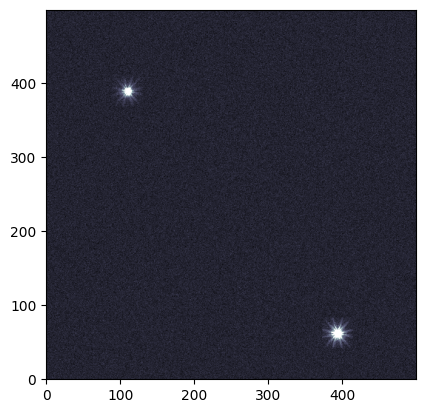
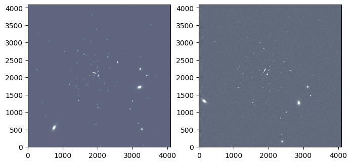
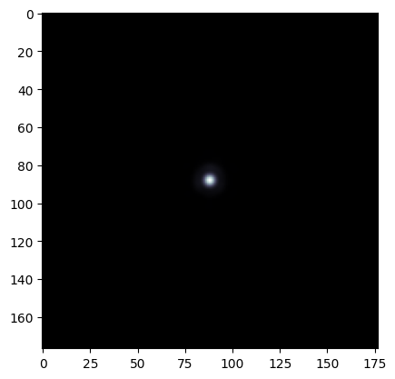

STIPS Tutorial#
Kernel Information and Read-Only Status#
To run this notebook, please select “Roman Research Nexus {VERSION}” kernel at the top right of your window. For example “Roman Research Nexus 2026.1”.
This notebook is read-only. You can run cells and make edits, but you must save changes to a different location. We recommend saving the notebook within your home directory, or to a new folder within your home (e.g. file > save notebook as > my-nbs/nb.ipynb). Note that a directory must exist before you attempt to add a notebook to it.
Introduction#
STIPS, or the Space Telescope Imaging Product Simulator, is a tool developed by STScI for simulating observations of astronomical scenes with the Roman Wide Field Instrument (WFI). Detailed documentation of the tool is available on the RDox pages.
STIPS can generate images of the entire WFI array, which consists of 18 detectors, also called Sensor Chip Assemblies (SCAs). For more information on the WFI detectors and focal plane array please see the RDox documentation. STIPS depends on the Pandeia Exposure time calculator and the STPSF point spread function (PSF) generator to create these simulations. Tutorial notebooks for both Pandeia and STPSF are also available. Users can choose to simulate between 1 and 18 SCAs in any of the WFI imaging filters, insert any number of point or extended sources, and specify a sky background estimate. STIPS will scale input fluxes to observed values, retrieve appropriate PSFs (interpolated to the positions of the sources), and add in additional noise terms.
As described in the Caveats to Using STIPS for Roman, neither pixel saturation nor non-linearity residuals are currently supported.
This notebook is a starter guide to simulating and manipulating scenes with STIPS.
Reference Data#
The cell below will check to ensure ancillary reference files for stips and pandeia packages are installed. If not, it will download the ancillary reference files and install them under your home directory (i.e., ${HOME}/refdata/).
Local Run Settings#
If you want to run the notebook in your local machine, refer to the information in local installation instructions before proceeding with the notebook. The instructions provide important information about setting up your environment, installing dependencies, and adding to your working directory scripts to help with the reference data installation.
Depending on which (if any) reference data are missing, this cell may take several minutes to execute.
On the Roman Research Nexus#
If you are working on the Nexus, then the ancillary reference data are pre-installed and this cell will execute instantly.
import os
import sys
import importlib.util
try:
import notebook_data_dependencies as ndd
local_script = True # Set to true when script is available locally
except ImportError:
local_script = False
# If running locally and script not in working dir,
# first get the directory with the script
if not local_script:
notebook_dir = os.getcwd()
shared_path = os.path.abspath(
os.path.join(notebook_dir, '..', '..', 'shared', 'notebook_data_dependencies.py')
)
if os.path.exists(shared_path):
print(f"Loading notebook_data_dependencies from shared location: {shared_path}")
spec = importlib.util.spec_from_file_location("notebook_data_dependencies", shared_path)
ndd = importlib.util.module_from_spec(spec)
sys.modules['notebook_data_dependencies'] = ndd # Optional: makes subsequent imports work
spec.loader.exec_module(ndd)
else:
raise FileNotFoundError(f"Local install script not found at {shared_path}")
# If working locally we first need to get the data used by some packages.
# Here the environment variables for the reference data
required = {
"stips_data": "stips",
"STPSF_PATH":"stpsf",
"pandeia_refdata": "pandeia_data",
"PSF_DIR":"pandeia_psf",
}
# Now let's retrieve the data for these packages
result = {}
for var, pkg in required.items():
if not os.getenv(var):
print(f"Running local data dependency installation for {var} ({pkg}) …")
result |= ndd.install_files(packages=pkg)
# Update environment variables (if necessary) and print reference data paths
print('Reference data paths set to:')
for k, v in result.items():
if not v['pre_installed']:
os.environ[k] = v['path']
print(os.environ[k])
print(f"\t{k} = {v['path']}")
else:
print("Running on RNN — data already available, skipping local install.")
Running on RNN — data already available, skipping local install.
Imports#
Besides the STIPS-related imports, the matplotlib imports will help visualize simulated images and astropy.io.fits will help write a FITS table on the fly.
import matplotlib as mpl
import matplotlib.pyplot as plt
import stips
import yaml
from astropy.io import fits
from stips.astro_image import AstroImage
from stips.observation_module import ObservationModule
from stips.scene_module import SceneModule
Environment report#
To verify the existing STIPS installation alongside its associated data files and dependencies, run the cell below. (Find the current software requirements in the STIPS documentation.)
print(stips.__env__report__)
STIPS Version 2.3.1 with Data Version 1.0.10 at /home/runner/refdata/stips_data.
STIPS Grid Generated with STIPS Version 1.1.0.
Pandeia Version 2026.2 with Data Version 2026.1 at /home/runner/refdata/pandeia_data-2026.1-roman and PSF Version 2026.1 at /home/runner/refdata/pandeia_psfs-2026.1-roman.
stpsf Version 2.2.0 with Data Version 2.2.0 at /home/runner/refdata/stpsf-data.
Examples#
Basic STIPS Usage#
This tutorial builds on the concepts introduced in the STIPS Overview article and is designed to walk through the phases of using STIPS at the most introductory level: creating a small scene, designing an observation, and generating a simulated image.
At its most fundamental level, STIPS takes a dictionary of observation and instrument parameters and a source catalog in order to return a simulated image. The source catalog can be either a user-defined input catalog in FITS format or it can be simulated using the STIPS SceneModule class (see below).
In this example, we start by specifying an observation dictionary for an image taken with the F129 filter, using the Detector 1 (WFI01), and with an exposure time of 300 seconds.
Note: We first need to update the path to the PSF cache using a YAML configuration file. A patch to fix the setting of this path in STIPS module calls will be released in the near future.
fix = {'psf_cache_location': os.environ["HOME"]}
with open('./stips_config.yaml', 'w') as file:
yaml.dump(fix, file)
Now we set up the observation dictionary:
obs = {'instrument': 'WFI', 'filters': ['F129'], 'detectors': 1,
'background': 'pandeia', 'observations_id': 42, 'exptime': 300,
'offsets': [{'offset_id': 1, 'offset_centre': False, 'offset_ra': 0.0,
'offset_dec': 0.0, 'offset_pa': 0.0}]
}
Then we feed the dictionary to an instance of the ObservationModule class, while also specifying the central coordinates (90 degrees right ascension and 30 degrees declination) and position angle (0 degrees) as keyword arguments.
obm = ObservationModule(obs, ra=90, dec=30, pa=0, seed=42, cores=6)
2026-05-29 15:32:06,459 INFO: Got offsets as [{'offset_id': 1, 'offset_centre': False, 'offset_ra': 0.0, 'offset_dec': 0.0, 'offset_pa': 0.0}]
2026-05-29 15:32:06,489 INFO: Adding observation with filter F129 and offset (0.0,0.0,0.0)
2026-05-29 15:32:06,490 INFO: Added 1 observations
2026-05-29 15:32:06,727 INFO: WFI with 1 detectors. Central offset (np.float64(2.065830864204697e-13), np.float64(-8.945310041616143e-14), 0)
Create a Simple Astronomical Scene#
The other requirement is an input source catalog. In this case, we generate and input a user-defined catalog. STIPS accepts several types of tables and catalogs in either the IPAC text or FITS BinTable format. This example uses a Mixed Catalog, which requires the following columns:
id: Object IDra: Right ascension (RA), in degreesdec: Declination (DEC), in degreesflux: Flux, inunits(defined below)type: Approximation used to profile a source. Options are'sersic'(for extended sources) orpointn: Sersic profile indexphi: Position angle of the Sersic profle’s major axis, in degreesratio: Ratio of the Sersic profile’s major and minor axesSince
n,phi,ratioonly apply to extended sources, they are ignored in rows wheretypeis set to'point'.
notes: Optional per-source commentsunits: One of‘p’for photons/s,‘e’for electrons/s,‘j’for Jansky, or‘c’for counts/s
Below, we create a catalog containing two sources located near the central coordinates specified in the ObservationModule.
cols = [
fits.Column(name='id', array=[1, 2], format='K'),
fits.Column(name='ra', array=[90.02, 90.03], format='D'),
fits.Column(name='dec', array=[29.98, 29.97], format='D'),
fits.Column(name='flux', array=[0.00023, 0.0004], format='D'),
fits.Column(name='type', array=['point', 'point'], format='8A'),
fits.Column(name='n', array=[0, 0], format='D'),
fits.Column(name='re', array=[0, 0], format='D'),
fits.Column(name='phi', array=[0, 0], format='D'),
fits.Column(name='ratio', array=[0, 0], format='D'),
fits.Column(name='notes', array=['', ''], format='8A'),
fits.Column(name='units', array=['j', 'j'], format='8A')
]
Next, we save the columns as a FITS table in the BinTable format and assign header keys that specify the filter and catalog type:
hdut = fits.BinTableHDU.from_columns(cols)
hdut.header['TYPE'] = 'mixed'
hdut.header['FILTER'] = 'F129'
And we save the catalog locally:
cat_file = 'catalog.fits'
hdut.writeto(cat_file, overwrite=True)
Simulate an Image#
With the observation module and source catalog in tow, STIPS can take over the image simulation process. First, we trigger the initialization of a new observation:
obm.nextObservation()
2026-05-29 15:32:06,758 INFO: Initializing Observation 0 of 1
2026-05-29 15:32:06,758 INFO: Observation Filter is F129
2026-05-29 15:32:06,759 INFO: Observation (RA,DEC) = (90.0,30.0) with PA=0.0
2026-05-29 15:32:06,760 INFO: Resetting
2026-05-29 15:32:06,980 INFO: Returning background 0.10970060309254233 for 'pandeia'
2026-05-29 15:32:06,981 INFO: Creating Detector WFI01 with (RA,DEC,PA) = (90.0,30.0,0.0)
2026-05-29 15:32:06,981 INFO: Creating Detector WFI01 with offset (0.0,0.0)
2026-05-29 15:32:06,991 INFO: Creating Instrument with Configuration {'aperture': 'imaging', 'detector': 'wfi01', 'disperser': None, 'filter': 'f129', 'instrument': 'wfi', 'mode': 'imaging'}
2026-05-29 15:32:07,021 INFO: WFI01: (RA, DEC, PA) := (90.0, 30.0, 0.0), detected as (90.0, 30.0, 0.0)
2026-05-29 15:32:07,021 INFO: Detector WFI01 created
2026-05-29 15:32:07,022 INFO: Reset Instrument
Creating pandeia instrument roman.wfi.imaging
0
Next, we simulate an image containing the sources from the catalog we created earlier. Then, we add error residuals to the image:
cat_name = obm.addCatalogue(cat_file)
2026-05-29 15:32:07,029 INFO: Running catalogue catalog.fits
2026-05-29 15:32:07,030 INFO: Adding catalogue catalog.fits
2026-05-29 15:32:07,037 INFO: Converting mixed catalogue
2026-05-29 15:32:07,038 INFO: Preparing output table
2026-05-29 15:32:07,052 INFO: Converting chunk 2
2026-05-29 15:32:07,060 INFO: Finished converting catalogue to internal format
2026-05-29 15:32:07,061 INFO: Adding catalogue to detector WFI01
2026-05-29 15:32:07,061 INFO: Adding catalogue catalog_42_conv_F129.fits to AstroImage WFI01
2026-05-29 15:32:07,081 INFO: Determining pixel co-ordinates
2026-05-29 15:32:07,081 INFO: Keeping 2 items
2026-05-29 15:32:07,082 INFO: Writing 2 stars
2026-05-29 15:32:07,083 INFO: Adding 2 point sources to AstroImage WFI01
2026-05-29 15:32:07,089 INFO: PSF File psf_WFI_2.3.1_F129_wfi01.fits to be put at /home/runner/psf_cache
2026-05-29 15:32:07,089 INFO: PSF File is /home/runner/psf_cache/psf_WFI_2.3.1_F129_wfi01.fits
2026-05-29 15:32:07,906 INFO: Adding point source 1 to AstroImage 2631.9672457028046,1410.503966182148
2026-05-29 15:32:07,918 INFO: Adding point source 2 to AstroImage 2915.5365753799083,1083.2929624680437
2026-05-29 15:32:07,941 INFO: Added catalogue catalog_42_conv_F129.fits to AstroImage WFI01
2026-05-29 15:32:07,941 INFO: Finished catalogue catalog.fits
obm.addError()
2026-05-29 15:32:07,946 INFO: Adding Error
2026-05-29 15:32:07,947 INFO: Adding residual error
2026-05-29 15:32:07,975 INFO: WFI01: (RA, DEC, PA) := (0.0, 0.0, 0.0), detected as (0.0, 0.0, 0.0)
2026-05-29 15:32:08,227 INFO: WFI01: (RA, DEC, PA) := (0.0, 0.0, 0.0), detected as (0.0, 0.0, 0.0)
2026-05-29 15:32:08,228 INFO: Created AstroImage WFI01 and imported data from FITS file err_flat_wfi.fits
2026-05-29 15:32:08,257 INFO: WFI01: (RA, DEC, PA) := (0.0, 0.0, 0.0), detected as (0.0, 0.0, 0.0)
2026-05-29 15:32:08,503 INFO: WFI01: (RA, DEC, PA) := (0.0, 0.0, 0.0), detected as (0.0, 0.0, 0.0)
2026-05-29 15:32:08,504 INFO: Created AstroImage WFI01 and imported data from FITS file err_rdrk_wfi.fits
2026-05-29 15:32:08,508 INFO: Adding error to detector WFI01
2026-05-29 15:32:08,509 INFO: Adding background
2026-05-29 15:32:08,699 INFO: Returning background 0.10970060309254233 for 'pandeia'
2026-05-29 15:32:08,700 INFO: Background is 0.10970060309254233 counts/s/pixel
2026-05-29 15:32:08,884 INFO: Returning background 0.10970060309254233 for 'pandeia'
2026-05-29 15:32:08,885 INFO: Added background of 0.10970060309254233 counts/s/pixel
2026-05-29 15:32:08,900 INFO: Inserting correct exposure time
2026-05-29 15:32:08,904 INFO: Cropping Down to base Detector Size
2026-05-29 15:32:08,905 INFO: Cropping convolved image down to detector size
2026-05-29 15:32:08,905 INFO: Taking [22:4110, 22:4110]
2026-05-29 15:32:08,914 INFO: WFI01: (RA, DEC, PA) := (90.0, 30.0, 0.0), detected as (90.0, 30.0, 0.0)
2026-05-29 15:32:08,915 INFO: Adding poisson noise
2026-05-29 15:32:09,365 INFO: Adding Poisson Noise with mean 0.00041581712372814624 and standard deviation 5.745736976603026
2026-05-29 15:32:09,367 INFO: Adding readnoise
2026-05-29 15:32:09,784 INFO: Adding readnoise with mean 0.0006565025541931391 and STDEV 12.00109577178955
2026-05-29 15:32:09,785 INFO: Adding flatfield residual
2026-05-29 15:32:09,820 INFO: Adding Flatfield residual with mean 1.0097910165786743 and standard deviation 0.0006765797734260559
2026-05-29 15:32:09,821 INFO: Adding dark residual
2026-05-29 15:32:09,856 INFO: Adding Dark residual with mean 0.20807769894599915 and standard deviation 1.1006208658218384
2026-05-29 15:32:09,857 INFO: Adding cosmic ray residual
2026-05-29 15:32:10,663 INFO: Adding Cosmic Ray residual with mean 0.0847659632563591 and standard deviation 1.9229004383087158
2026-05-29 15:32:10,667 INFO: Finished adding error
2026-05-29 15:32:10,669 INFO: Finished Adding Error
We finish by saving the outputs to a FITS file. The finalize() method of the ObservationModule object can also return a full field of view mosaic and a list of the simulation’s initial parameters.
fits_file_1, _, params_1 = obm.finalize(mosaic=False)
print(f"Output FITS file is {fits_file_1}")
2026-05-29 15:32:10,674 INFO: Converting to FITS file
2026-05-29 15:32:10,675 INFO: Converting detector WFI01 to FITS extension
2026-05-29 15:32:10,675 INFO: Creating Extension HDU from AstroImage WFI01
2026-05-29 15:32:10,678 INFO: Created Extension HDU from AstroImage WFI01
2026-05-29 15:32:10,706 INFO: Created FITS file /home/runner/work/roman_notebooks/roman_notebooks/notebooks/stips/sim_42_0.fits
Output FITS file is /home/runner/work/roman_notebooks/roman_notebooks/notebooks/stips/sim_42_0.fits
for prm in params_1:
print(prm)
Instrument: WFI
Filters: F129
Pixel Scale: (0.110,0.110) arcsec/pix
Pivot Wavelength: 1.290 um
Background Type: Pandeia background rate
Exposure Time: 300.0s
Input Unit: counts/s
Added Flatfield Residual: True
Added Dark Current Residual: True
Added Cosmic Ray Residual: True
Added Readnoise: True
Added Poisson Noise: True
Detector X size: 4088
Detector Y size: 4088
Random Seed: 42
img_1 = fits.getdata(fits_file_1)[1000:1500, 2500:3000]
plt.imshow(img_1, vmax=1.5, origin='lower', cmap='bone')
<matplotlib.image.AxesImage at 0x7f2afc3581a0>

Generate Scenes Using STIPS Built-In Functions#
STIPS can simulate scenes by importing pre-existing catalogs (as in the first example) or by using built-in functionality that generates collections of stars or galaxies based on user-specified parameters. Below, we will use the STIPS SceneModule to generate a stellar population and a galactic population.
First, we specify a set of parameters that will be used in both scenes (RA, DEC, ID) and initialize two SceneModule instances, one for the stellar population and one for the galaxy population:
obs_prefix_1 = 'notebook_example1'
obs_ra = 150.0
obs_dec = -2.5
scm_stellar = SceneModule(out_prefix=obs_prefix_1, ra=obs_ra, dec=obs_dec)
scm_galactic = SceneModule(out_prefix=obs_prefix_1, ra=obs_ra, dec=obs_dec)
Log level: INFO
Log level: INFO
Create a Stellar Population#
Now we create a dictionary containing the parameters of the desired stellar population to pass to the SceneModule instance’s CreatePopulation() method. The following parameters are needed to define a stellar population:
Number of point sources
Upper and lower limit of the age of the stars (in years)
Upper and lower limit of the metallicity of the stars
Initial Mass Function
Binary fraction
Clustering (True/False)
Distribution type (Uniform, Inverse power-law)
Total radius of the population
Distance from the population
Offset RA and DEC from the center of the scene being created
A full accounting of each dictionary entry’s meaning can be found in the docstring of the CreatePopulation() method:
scm_stellar.CreatePopulation?
stellar_parameters = {'n_stars': 100, 'age_low': 7.5e12, 'age_high': 7.5e12,
'z_low': -2.0, 'z_high': -2.0, 'imf': 'salpeter',
'alpha': -2.35, 'binary_fraction': 0.1,
'distribution': 'invpow', 'clustered': True,
'radius': 100.0, 'radius_units': 'pc',
'distance_low': 20.0, 'distance_high': 20.0,
'offset_ra': 0.0, 'offset_dec': 0.0
}
We pass the dictionary to the stellar SceneModule instance’s CreatePopulation() method. Running the method will save the newly-generated population locally.
stellar_cat_file = scm_stellar.CreatePopulation(stellar_parameters)
print(f"Stellar population saved to file {stellar_cat_file}")
2026-05-29 15:32:10,964 INFO: Creating catalogue /home/runner/work/roman_notebooks/roman_notebooks/notebooks/stips/notebook_example1_stars_000.fits
2026-05-29 15:32:10,964 INFO: Creating age and metallicity numbers
2026-05-29 15:32:10,965 INFO: Created age and metallicity numbers
2026-05-29 15:32:10,965 INFO: Creating stars
2026-05-29 15:32:10,966 INFO: Age 1.35e+10
2026-05-29 15:32:10,966 INFO: Metallicity -2.000000
2026-05-29 15:32:10,967 INFO: Creating 100 stars
2026-05-29 15:32:11,280 INFO: Creating 100 objects, max radius 100.0, function invpow, scale 2.8
2026-05-29 15:32:11,338 INFO: Chunk 1: 107 stars
2026-05-29 15:32:11,350 INFO: Done creating catalogue
Stellar population saved to file /home/runner/work/roman_notebooks/roman_notebooks/notebooks/stips/notebook_example1_stars_000.fits
Create a Galactic Population#
Repeat the population generation process, now by creating a dictionary containing parameters of a desired galactic population. The following paramters are needed to define a galaxy population:
Number of galaxies
Upper and lower limit of the redshift
Upper and lower limit of the galactic radii
Range of V-band surface brightness magnitudes
Clustering (True/False)
Distribution type (Uniform, Inverse power-law)
Radius of the distribution
Offset RA and DEC from the center of the scene being created
A full accounting of each dictionary entry’s meaning can be found in the docstring of the CreateGalaxies() method:
scm_galactic.CreateGalaxies?
We pass the dictionary to the galaxy SceneModule instance’s CreateGalaxies() method, and save the result locally:
galaxy_parameters = {'n_gals': 10, 'z_low': 0.0, 'z_high': 0.2,
'rad_low': 0.01, 'rad_high': 2.0,
'sb_v_low': 30.0, 'sb_v_high': 25.0,
'distribution': 'uniform', 'clustered': False,
'radius': 200.0, 'radius_units': 'arcsec',
'offset_ra': 0.0, 'offset_dec': 0.0
}
galaxy_cat_file = scm_galactic.CreateGalaxies(galaxy_parameters)
print(f"Galaxy population saved to file {galaxy_cat_file}")
2026-05-29 15:32:11,365 INFO: Creating catalogue /home/runner/work/roman_notebooks/roman_notebooks/notebooks/stips/notebook_example1_gals_000.fits
2026-05-29 15:32:11,366 INFO: Wrote preamble
2026-05-29 15:32:11,366 INFO: Parameters are: {'n_gals': 10, 'z_low': 0.0, 'z_high': 0.2, 'rad_low': 0.01, 'rad_high': 2.0, 'sb_v_low': 30.0, 'sb_v_high': 25.0, 'distribution': 'uniform', 'clustered': False, 'radius': 200.0, 'radius_units': 'arcsec', 'offset_ra': 0.0, 'offset_dec': 0.0}
2026-05-29 15:32:11,367 INFO: Making Co-ordinates
2026-05-29 15:32:11,368 INFO: Creating 10 objects, max radius 200.0, function uniform, scale 2.8
2026-05-29 15:32:11,368 INFO: Converting Co-ordinates into RA,DEC
2026-05-29 15:32:11,379 INFO: Done creating catalogue
Galaxy population saved to file /home/runner/work/roman_notebooks/roman_notebooks/notebooks/stips/notebook_example1_gals_000.fits
Set up an Observation (First Pointing)#
Once we’ve created a scene, we can use STIPS to simulate as many exposures of it in as many orientations as we’d like. In STIPS, a single telescope pointing is called an offset, and a collection of exposures is an observation.
We start this subsection by creating a single offset that is dithered by 2 degrees in right ascension and rotated by 0.5 degrees in position angle from the center of the scene.
offset_1 = {'offset_id': 1, 'offset_centre': False,
# True would center each detector on the same on-sky point
'offset_ra': 2.0, 'offset_dec': 0.0, 'offset_pa': 0.5
}
The offset information is contained within an observation that is taken with the F129 filter, uses detectors WFI01 through WFI03, and has an exposure time of 1500 seconds. We also apply distortion and specify a sky background of 0.24 counts/s/pixel.
observation_parameters_1 = {'instrument': 'WFI', 'filters': ['F129'],
'detectors': 3, 'distortion': True,
'background': 0.24, 'observations_id': 1,
'exptime': 1500, 'offsets': [offset_1]
}
STIPS can also apply various types of error residuals to the observation. Here, we only include residuals from flat-fields and the dark current.
residuals_1 = {'residual_flat': True, 'residual_dark': True,
'residual_cosmic': False, 'residual_poisson': False,
'residual_readnoise': False
}
Next, we feed the observation dictionary to an instance of the ObservationModule class, alongside the observation ID, right ascension, and declination specified earlier in this example.
obm_1 = ObservationModule(observation_parameters_1, residual=residuals_1,
out_prefix=obs_prefix_1, ra=obs_ra, dec=obs_dec)
2026-05-29 15:32:11,400 INFO: Got offsets as [{'offset_id': 1, 'offset_centre': False, 'offset_ra': 2.0, 'offset_dec': 0.0, 'offset_pa': 0.5}]
2026-05-29 15:32:11,420 INFO: Adding observation with filter F129 and offset (2.0,0.0,0.5)
2026-05-29 15:32:11,420 INFO: Added 1 observations
2026-05-29 15:32:11,602 INFO: WFI with 3 detectors. Central offset (np.float64(1.7907664211548176e-13), np.float64(-8.945310041616143e-14), 0)
We call the ObservationModule object’s nextObservation() method to move to the first offset/filter combination (offset_1 and F129) contained in the object.
obm_1.nextObservation()
2026-05-29 15:32:11,608 INFO: Initializing Observation 0 of 1
2026-05-29 15:32:11,608 INFO: Observation Filter is F129
2026-05-29 15:32:11,609 INFO: Observation (RA,DEC) = (150.00055555555556,-2.5) with PA=0.5
2026-05-29 15:32:11,609 INFO: Resetting
2026-05-29 15:32:11,610 INFO: Returning background 0.24.
2026-05-29 15:32:11,611 INFO: Creating Detector WFI01 with (RA,DEC,PA) = (150.00055555555556,-2.5,0.5)
2026-05-29 15:32:11,611 INFO: Creating Detector WFI01 with offset (0.0,0.0)
2026-05-29 15:32:11,622 INFO: Creating Instrument with Configuration {'aperture': 'imaging', 'detector': 'wfi01', 'disperser': None, 'filter': 'f129', 'instrument': 'wfi', 'mode': 'imaging'}
2026-05-29 15:32:11,654 INFO: WFI01: (RA, DEC, PA) := (150.00055555555556, -2.5, 0.5), detected as (150.00055555555556, -2.5, 0.5000000000001229)
2026-05-29 15:32:11,654 INFO: Detector WFI01 created
2026-05-29 15:32:11,655 INFO: Creating Detector WFI02 with (RA,DEC,PA) = (150.00063361633363,-2.6463679052675504,0.5)
2026-05-29 15:32:11,655 INFO: Creating Detector WFI02 with offset (7.806077806812047e-05,-0.1463679052675503)
2026-05-29 15:32:11,665 INFO: WFI02: (RA, DEC, PA) := (150.00063361633363, -2.6463679052675504, 0.5), detected as (150.00063361633363, -2.6463679052675504, 0.5000000000001229)
2026-05-29 15:32:11,666 INFO: Detector WFI02 created
2026-05-29 15:32:11,666 INFO: Creating Detector WFI03 with (RA,DEC,PA) = (150.00076976694686,-2.777285221181246,0.5)
2026-05-29 15:32:11,667 INFO: Creating Detector WFI03 with offset (0.00021421139128143576,-0.2772852211812461)
2026-05-29 15:32:11,677 INFO: WFI03: (RA, DEC, PA) := (150.00076976694686, -2.777285221181246, 0.5), detected as (150.00076976694686, -2.777285221181246, 0.5000000000001229)
2026-05-29 15:32:11,678 INFO: Detector WFI03 created
2026-05-29 15:32:11,678 INFO: Reset Instrument
Creating pandeia instrument roman.wfi.imaging
0
Now that the observation is fully set up, we add the stellar and galactic populations to it. (Please note that each population may take about a minute to load.)
output_stellar_catalogs_1 = obm_1.addCatalogue(stellar_cat_file)
output_galaxy_catalogs_1 = obm_1.addCatalogue(galaxy_cat_file)
print(f"Output Catalogs are {output_stellar_catalogs_1} and "
f"{output_galaxy_catalogs_1}.")
2026-05-29 15:32:11,685 INFO: Running catalogue /home/runner/work/roman_notebooks/roman_notebooks/notebooks/stips/notebook_example1_stars_000.fits
2026-05-29 15:32:11,685 INFO: Adding catalogue /home/runner/work/roman_notebooks/roman_notebooks/notebooks/stips/notebook_example1_stars_000.fits
2026-05-29 15:32:11,696 INFO: Converting phoenix catalogue
2026-05-29 15:32:11,697 INFO: Preparing output table
2026-05-29 15:32:11,717 INFO: Converting chunk 2
2026-05-29 15:32:11,718 INFO: Converting Phoenix Table to Internal format
2026-05-29 15:32:11,718 INFO: 1 datasets
2026-05-29 15:32:12,065 INFO: Finished converting catalogue to internal format
2026-05-29 15:32:12,066 INFO: Adding catalogue to detector WFI01
2026-05-29 15:32:12,066 INFO: Adding catalogue notebook_example1_stars_000_01_conv_F129.fits to AstroImage WFI01
2026-05-29 15:32:12,087 INFO: Determining pixel co-ordinates
2026-05-29 15:32:12,088 INFO: Keeping 69 items
2026-05-29 15:32:12,089 INFO: Writing 69 stars
2026-05-29 15:32:12,089 INFO: Adding 69 point sources to AstroImage WFI01
2026-05-29 15:32:12,095 INFO: PSF File psf_WFI_2.3.1_F129_wfi01.fits to be put at /home/runner/psf_cache
2026-05-29 15:32:12,096 INFO: PSF File is /home/runner/psf_cache/psf_WFI_2.3.1_F129_wfi01.fits
2026-05-29 15:32:12,923 INFO: Adding point source 1 to AstroImage 2045.64039325107,2059.5269863772082
2026-05-29 15:32:12,934 INFO: Adding point source 2 to AstroImage 2056.3580385022583,2081.4342788663043
2026-05-29 15:32:12,946 INFO: Adding point source 3 to AstroImage 2052.9580468697254,2052.82238114173
2026-05-29 15:32:12,958 INFO: Adding point source 4 to AstroImage 2040.56976404736,2201.095363689997
2026-05-29 15:32:12,969 INFO: Adding point source 5 to AstroImage 2217.4362579003464,1844.3532845315262
2026-05-29 15:32:12,981 INFO: Adding point source 6 to AstroImage 2077.0429752544082,1985.1189475912527
2026-05-29 15:32:12,992 INFO: Adding point source 7 to AstroImage 2030.0691670209997,2105.169871411036
2026-05-29 15:32:13,003 INFO: Adding point source 8 to AstroImage 1929.6463505735846,2072.492373821004
2026-05-29 15:32:13,015 INFO: Adding point source 9 to AstroImage 2046.836178495134,2065.1585094272887
2026-05-29 15:32:13,026 INFO: Adding point source 10 to AstroImage 2030.958904068434,2181.9333554931295
2026-05-29 15:32:13,038 INFO: Adding point source 11 to AstroImage 2042.364603856278,2102.6154980636607
2026-05-29 15:32:13,049 INFO: Adding point source 12 to AstroImage 1744.544758638553,1825.5476987759052
2026-05-29 15:32:13,061 INFO: Adding point source 13 to AstroImage 1829.4784538586166,2399.015713216917
2026-05-29 15:32:13,072 INFO: Adding point source 14 to AstroImage 2576.0491329741753,1908.6321119443369
2026-05-29 15:32:13,084 INFO: Adding point source 15 to AstroImage 2538.1856097063182,1793.778546630899
2026-05-29 15:32:13,095 INFO: Adding point source 16 to AstroImage 2036.3782005817131,2501.606846702024
2026-05-29 15:32:13,107 INFO: Adding point source 17 to AstroImage 1890.8394670391629,1994.385817195917
2026-05-29 15:32:13,118 INFO: Adding point source 18 to AstroImage 2760.224195253249,2713.093058017587
2026-05-29 15:32:13,130 INFO: Adding point source 19 to AstroImage 1429.8661052487578,2432.4104433125863
2026-05-29 15:32:13,142 INFO: Adding point source 20 to AstroImage 1478.2581483627996,1354.0721158622925
2026-05-29 15:32:13,153 INFO: Adding point source 21 to AstroImage 2366.8638977753308,2292.072519549135
2026-05-29 15:32:13,165 INFO: Adding point source 22 to AstroImage 2010.2792440514927,1237.8856761415836
2026-05-29 15:32:13,177 INFO: Adding point source 23 to AstroImage 2006.1340596735506,1907.8152243078325
2026-05-29 15:32:13,188 INFO: Adding point source 24 to AstroImage 2333.6027297930777,2705.197113554823
2026-05-29 15:32:13,200 INFO: Adding point source 25 to AstroImage 1451.0640871585647,2779.9194715859703
2026-05-29 15:32:13,211 INFO: Adding point source 26 to AstroImage 3478.921896578355,1419.3557751401263
2026-05-29 15:32:13,223 INFO: Adding point source 27 to AstroImage 3703.6175767552554,2041.3155849553928
2026-05-29 15:32:13,235 INFO: Adding point source 28 to AstroImage 2324.480106900587,1652.2557379036323
2026-05-29 15:32:13,246 INFO: Adding point source 29 to AstroImage 2011.2454480622257,2302.201964721642
2026-05-29 15:32:13,257 INFO: Adding point source 30 to AstroImage 1923.0679406941128,2463.2073000846535
2026-05-29 15:32:13,269 INFO: Adding point source 31 to AstroImage 2056.822417065089,2067.519204679202
2026-05-29 15:32:13,280 INFO: Adding point source 32 to AstroImage 1877.8868682659638,3816.3396272378523
2026-05-29 15:32:13,291 INFO: Adding point source 33 to AstroImage 1997.9144410209155,3397.259123892911
2026-05-29 15:32:13,303 INFO: Adding point source 34 to AstroImage 2009.6424077193024,2303.6531717069142
2026-05-29 15:32:13,314 INFO: Adding point source 35 to AstroImage 1976.767879118502,666.0932586519848
2026-05-29 15:32:13,326 INFO: Adding point source 36 to AstroImage 2104.3508106545323,1669.3686382230285
2026-05-29 15:32:13,337 INFO: Adding point source 37 to AstroImage 2025.6017896025319,2042.9872913245538
2026-05-29 15:32:13,349 INFO: Adding point source 38 to AstroImage 2954.468569770216,1110.7571877685027
2026-05-29 15:32:13,360 INFO: Adding point source 39 to AstroImage 1690.0330239971247,2645.1118961037164
2026-05-29 15:32:13,371 INFO: Adding point source 40 to AstroImage 1410.2069135516208,1770.3260054013942
2026-05-29 15:32:13,382 INFO: Adding point source 41 to AstroImage 3550.4097815020364,3528.4603381702727
2026-05-29 15:32:13,393 INFO: Adding point source 42 to AstroImage 1937.8822196542087,2643.4490877185885
2026-05-29 15:32:13,405 INFO: Adding point source 43 to AstroImage 3254.389744915894,2614.3198977949496
2026-05-29 15:32:13,416 INFO: Adding point source 44 to AstroImage 1631.7171659016901,1971.6253748703775
2026-05-29 15:32:13,427 INFO: Adding point source 45 to AstroImage 3337.3420793946225,61.96158129001378
2026-05-29 15:32:13,439 INFO: Adding point source 46 to AstroImage 1473.780153893394,1693.6444802284564
2026-05-29 15:32:13,451 INFO: Adding point source 47 to AstroImage 850.1250042086642,674.8157982924824
2026-05-29 15:32:13,462 INFO: Adding point source 48 to AstroImage 1429.612889844871,1965.3951278402897
2026-05-29 15:32:13,473 INFO: Adding point source 49 to AstroImage 534.6161251100266,896.7968286561334
2026-05-29 15:32:13,484 INFO: Adding point source 50 to AstroImage 2295.7521613794574,3098.9132415282866
2026-05-29 15:32:13,496 INFO: Adding point source 51 to AstroImage 1239.2403376272862,1908.2408521514535
2026-05-29 15:32:13,507 INFO: Adding point source 52 to AstroImage 1210.3537936645755,1818.8199023511706
2026-05-29 15:32:13,518 INFO: Adding point source 53 to AstroImage 3021.2613445649235,1336.2516765419714
2026-05-29 15:32:13,530 INFO: Adding point source 54 to AstroImage 2311.10258154879,2604.539142103435
2026-05-29 15:32:13,541 INFO: Adding point source 55 to AstroImage 1072.485985332225,2763.5638003781437
2026-05-29 15:32:13,552 INFO: Adding point source 56 to AstroImage 1705.9256268156118,1800.6431237065472
2026-05-29 15:32:13,563 INFO: Adding point source 57 to AstroImage 365.959729195333,3270.006195604754
2026-05-29 15:32:13,575 INFO: Adding point source 58 to AstroImage 2116.564500114606,1110.4263516593896
2026-05-29 15:32:13,586 INFO: Adding point source 59 to AstroImage 1468.169257077326,1499.7301875962264
2026-05-29 15:32:13,597 INFO: Adding point source 60 to AstroImage 1800.7517740777364,2067.4777120871427
2026-05-29 15:32:13,609 INFO: Adding point source 61 to AstroImage 3186.5079917564267,699.0555126480438
2026-05-29 15:32:13,620 INFO: Adding point source 62 to AstroImage 635.0168705146807,3059.709361508989
2026-05-29 15:32:13,631 INFO: Adding point source 63 to AstroImage 1823.1039366533394,3043.3532027187985
2026-05-29 15:32:13,642 INFO: Adding point source 64 to AstroImage 281.5168192970825,2243.837759651283
2026-05-29 15:32:13,654 INFO: Adding point source 65 to AstroImage 434.37837964653863,1294.362605254385
2026-05-29 15:32:13,665 INFO: Adding point source 66 to AstroImage 1282.3753120770132,2247.3825100531194
2026-05-29 15:32:13,676 INFO: Adding point source 67 to AstroImage 1617.5379219656538,3117.190854524013
2026-05-29 15:32:13,687 INFO: Adding point source 68 to AstroImage 1631.0558212536628,2683.446070001324
2026-05-29 15:32:13,699 INFO: Adding point source 69 to AstroImage 2671.841438749836,4116.145339267959
2026-05-29 15:32:13,723 INFO: Added catalogue notebook_example1_stars_000_01_conv_F129.fits to AstroImage WFI01
2026-05-29 15:32:13,723 INFO: Adding catalogue to detector WFI02
2026-05-29 15:32:13,724 INFO: Adding catalogue notebook_example1_stars_000_01_conv_F129.fits to AstroImage WFI02
2026-05-29 15:32:13,745 INFO: Determining pixel co-ordinates
2026-05-29 15:32:13,746 INFO: Keeping 1 items
2026-05-29 15:32:13,747 INFO: Writing 1 stars
2026-05-29 15:32:13,747 INFO: Adding 1 point sources to AstroImage WFI02
2026-05-29 15:32:13,753 INFO: PSF File psf_WFI_2.3.1_F129_wfi02.fits to be put at /home/runner/psf_cache
2026-05-29 15:32:13,754 INFO: PSF File is /home/runner/psf_cache/psf_WFI_2.3.1_F129_wfi02.fits
2026-05-29 15:32:14,564 INFO: Adding point source 1 to AstroImage 3650.7925354852086,2022.4886617610327
2026-05-29 15:32:14,590 INFO: Added catalogue notebook_example1_stars_000_01_conv_F129.fits to AstroImage WFI02
2026-05-29 15:32:14,591 INFO: Adding catalogue to detector WFI03
2026-05-29 15:32:14,591 INFO: Adding catalogue notebook_example1_stars_000_01_conv_F129.fits to AstroImage WFI03
2026-05-29 15:32:14,613 INFO: Determining pixel co-ordinates
2026-05-29 15:32:14,614 INFO: Keeping 0 items
2026-05-29 15:32:14,616 INFO: Added catalogue notebook_example1_stars_000_01_conv_F129.fits to AstroImage WFI03
2026-05-29 15:32:14,616 INFO: Finished catalogue /home/runner/work/roman_notebooks/roman_notebooks/notebooks/stips/notebook_example1_stars_000.fits
2026-05-29 15:32:14,616 INFO: Running catalogue /home/runner/work/roman_notebooks/roman_notebooks/notebooks/stips/notebook_example1_gals_000.fits
2026-05-29 15:32:14,617 INFO: Adding catalogue /home/runner/work/roman_notebooks/roman_notebooks/notebooks/stips/notebook_example1_gals_000.fits
2026-05-29 15:32:14,625 INFO: Converting bc95 catalogue
2026-05-29 15:32:14,626 INFO: Preparing output table
2026-05-29 15:32:14,641 INFO: Converting chunk 2
2026-05-29 15:32:14,642 INFO: Converting BC95 Catalogue
2026-05-29 15:32:14,642 INFO: Normalization Bandpass is johnson,v (<class 'str'>)
2026-05-29 15:32:14,643 INFO: Normalization Bandpass is johnson,v
2026-05-29 15:32:14,653 WARNING: DataConfigurationError: Error loading normalization bandpass: johnson_v EngineInputError("Invalid keys provided: ['johnson_v'] ('johnson_v')")
2026-05-29 15:32:14,682 WARNING: DataConfigurationError: Error loading normalization bandpass: johnson_v EngineInputError("Invalid keys provided: ['johnson_v'] ('johnson_v')")
2026-05-29 15:32:14,709 WARNING: DataConfigurationError: Error loading normalization bandpass: johnson_v EngineInputError("Invalid keys provided: ['johnson_v'] ('johnson_v')")
2026-05-29 15:32:14,738 WARNING: DataConfigurationError: Error loading normalization bandpass: johnson_v EngineInputError("Invalid keys provided: ['johnson_v'] ('johnson_v')")
2026-05-29 15:32:14,765 WARNING: DataConfigurationError: Error loading normalization bandpass: johnson_v EngineInputError("Invalid keys provided: ['johnson_v'] ('johnson_v')")
2026-05-29 15:32:14,794 WARNING: DataConfigurationError: Error loading normalization bandpass: johnson_v EngineInputError("Invalid keys provided: ['johnson_v'] ('johnson_v')")
2026-05-29 15:32:14,823 WARNING: DataConfigurationError: Error loading normalization bandpass: johnson_v EngineInputError("Invalid keys provided: ['johnson_v'] ('johnson_v')")
2026-05-29 15:32:14,851 WARNING: DataConfigurationError: Error loading normalization bandpass: johnson_v EngineInputError("Invalid keys provided: ['johnson_v'] ('johnson_v')")
2026-05-29 15:32:14,879 WARNING: DataConfigurationError: Error loading normalization bandpass: johnson_v EngineInputError("Invalid keys provided: ['johnson_v'] ('johnson_v')")
2026-05-29 15:32:14,906 WARNING: DataConfigurationError: Error loading normalization bandpass: johnson_v EngineInputError("Invalid keys provided: ['johnson_v'] ('johnson_v')")
2026-05-29 15:32:14,933 INFO: Finished converting catalogue to internal format
2026-05-29 15:32:14,934 INFO: Adding catalogue to detector WFI01
2026-05-29 15:32:14,934 INFO: Adding catalogue notebook_example1_gals_000_01_conv_F129.fits to AstroImage WFI01
2026-05-29 15:32:14,956 INFO: Determining pixel co-ordinates
2026-05-29 15:32:14,956 INFO: Keeping 10 items
2026-05-29 15:32:14,957 INFO: Writing 10 galaxies
2026-05-29 15:32:14,958 INFO: Starting Sersic Profiles at Fri May 29 15:32:14 2026
2026-05-29 15:32:14,958 INFO: Index is 0
2026-05-29 15:32:17,732 INFO: PSF File psf_WFI_2.3.1_F129_wfi01.fits to be put at /home/runner/psf_cache
2026-05-29 15:32:17,733 INFO: PSF File is /home/runner/psf_cache/psf_WFI_2.3.1_F129_wfi01.fits
2026-05-29 15:32:20,519 INFO: Finished Galaxy 1 of 10
2026-05-29 15:32:20,520 INFO: Index is 1
Step 0 duration in WFI01 with fast_galaxy=False and convolve_galaxy=True: 5.5614 seconds, Running total: 5.5614 seconds
2026-05-29 15:32:23,278 INFO: PSF File psf_WFI_2.3.1_F129_wfi01.fits to be put at /home/runner/psf_cache
2026-05-29 15:32:23,279 INFO: PSF File is /home/runner/psf_cache/psf_WFI_2.3.1_F129_wfi01.fits
2026-05-29 15:32:26,036 INFO: Finished Galaxy 2 of 10
2026-05-29 15:32:26,037 INFO: Index is 2
Step 1 duration in WFI01 with fast_galaxy=False and convolve_galaxy=True: 5.5171 seconds, Running total: 11.0785 seconds
2026-05-29 15:32:28,772 INFO: PSF File psf_WFI_2.3.1_F129_wfi01.fits to be put at /home/runner/psf_cache
2026-05-29 15:32:28,772 INFO: PSF File is /home/runner/psf_cache/psf_WFI_2.3.1_F129_wfi01.fits
2026-05-29 15:32:31,541 INFO: Finished Galaxy 3 of 10
2026-05-29 15:32:31,541 INFO: Index is 3
Step 2 duration in WFI01 with fast_galaxy=False and convolve_galaxy=True: 5.5044 seconds, Running total: 16.5830 seconds
2026-05-29 15:32:33,906 INFO: PSF File psf_WFI_2.3.1_F129_wfi01.fits to be put at /home/runner/psf_cache
2026-05-29 15:32:33,907 INFO: PSF File is /home/runner/psf_cache/psf_WFI_2.3.1_F129_wfi01.fits
2026-05-29 15:32:36,695 INFO: Finished Galaxy 4 of 10
2026-05-29 15:32:36,696 INFO: Index is 4
Step 3 duration in WFI01 with fast_galaxy=False and convolve_galaxy=True: 5.1544 seconds, Running total: 21.7374 seconds
2026-05-29 15:32:39,446 INFO: PSF File psf_WFI_2.3.1_F129_wfi01.fits to be put at /home/runner/psf_cache
2026-05-29 15:32:39,446 INFO: PSF File is /home/runner/psf_cache/psf_WFI_2.3.1_F129_wfi01.fits
2026-05-29 15:32:42,201 INFO: Finished Galaxy 5 of 10
2026-05-29 15:32:42,202 INFO: Index is 5
Step 4 duration in WFI01 with fast_galaxy=False and convolve_galaxy=True: 5.5056 seconds, Running total: 27.2432 seconds
2026-05-29 15:32:44,631 INFO: PSF File psf_WFI_2.3.1_F129_wfi01.fits to be put at /home/runner/psf_cache
2026-05-29 15:32:44,632 INFO: PSF File is /home/runner/psf_cache/psf_WFI_2.3.1_F129_wfi01.fits
2026-05-29 15:32:47,406 INFO: Finished Galaxy 6 of 10
2026-05-29 15:32:47,407 INFO: Index is 6
Step 5 duration in WFI01 with fast_galaxy=False and convolve_galaxy=True: 5.2053 seconds, Running total: 32.4486 seconds
2026-05-29 15:32:49,777 INFO: PSF File psf_WFI_2.3.1_F129_wfi01.fits to be put at /home/runner/psf_cache
2026-05-29 15:32:49,778 INFO: PSF File is /home/runner/psf_cache/psf_WFI_2.3.1_F129_wfi01.fits
2026-05-29 15:32:52,558 INFO: Finished Galaxy 7 of 10
2026-05-29 15:32:52,559 INFO: Index is 7
Step 6 duration in WFI01 with fast_galaxy=False and convolve_galaxy=True: 5.1517 seconds, Running total: 37.6003 seconds
2026-05-29 15:32:55,326 INFO: PSF File psf_WFI_2.3.1_F129_wfi01.fits to be put at /home/runner/psf_cache
2026-05-29 15:32:55,327 INFO: PSF File is /home/runner/psf_cache/psf_WFI_2.3.1_F129_wfi01.fits
2026-05-29 15:32:58,098 INFO: Finished Galaxy 8 of 10
2026-05-29 15:32:58,099 INFO: Index is 8
Step 7 duration in WFI01 with fast_galaxy=False and convolve_galaxy=True: 5.5403 seconds, Running total: 43.1406 seconds
2026-05-29 15:33:00,857 INFO: PSF File psf_WFI_2.3.1_F129_wfi01.fits to be put at /home/runner/psf_cache
2026-05-29 15:33:00,858 INFO: PSF File is /home/runner/psf_cache/psf_WFI_2.3.1_F129_wfi01.fits
2026-05-29 15:33:03,619 INFO: Finished Galaxy 9 of 10
2026-05-29 15:33:03,619 INFO: Index is 9
Step 8 duration in WFI01 with fast_galaxy=False and convolve_galaxy=True: 5.5202 seconds, Running total: 48.6609 seconds
2026-05-29 15:33:05,925 INFO: PSF File psf_WFI_2.3.1_F129_wfi01.fits to be put at /home/runner/psf_cache
2026-05-29 15:33:05,925 INFO: PSF File is /home/runner/psf_cache/psf_WFI_2.3.1_F129_wfi01.fits
2026-05-29 15:33:08,688 INFO: Finished Galaxy 10 of 10
2026-05-29 15:33:08,688 INFO: Finishing Sersic Profiles at Fri May 29 15:33:08 2026
2026-05-29 15:33:08,704 INFO: Added catalogue notebook_example1_gals_000_01_conv_F129.fits to AstroImage WFI01
2026-05-29 15:33:08,705 INFO: Adding catalogue to detector WFI02
2026-05-29 15:33:08,705 INFO: Adding catalogue notebook_example1_gals_000_01_conv_F129.fits to AstroImage WFI02
2026-05-29 15:33:08,718 INFO: Determining pixel co-ordinates
2026-05-29 15:33:08,719 INFO: Keeping 0 items
2026-05-29 15:33:08,721 INFO: Added catalogue notebook_example1_gals_000_01_conv_F129.fits to AstroImage WFI02
2026-05-29 15:33:08,721 INFO: Adding catalogue to detector WFI03
2026-05-29 15:33:08,722 INFO: Adding catalogue notebook_example1_gals_000_01_conv_F129.fits to AstroImage WFI03
2026-05-29 15:33:08,734 INFO: Determining pixel co-ordinates
2026-05-29 15:33:08,735 INFO: Keeping 0 items
2026-05-29 15:33:08,737 INFO: Added catalogue notebook_example1_gals_000_01_conv_F129.fits to AstroImage WFI03
2026-05-29 15:33:08,737 INFO: Finished catalogue /home/runner/work/roman_notebooks/roman_notebooks/notebooks/stips/notebook_example1_gals_000.fits
Step 9 duration in WFI01 with fast_galaxy=False and convolve_galaxy=True: 5.0688 seconds, Running total: 53.7298 seconds
Output Catalogs are ['/home/runner/work/roman_notebooks/roman_notebooks/notebooks/stips/notebook_example1_stars_000_01_conv_F129.fits', '/home/runner/work/roman_notebooks/roman_notebooks/notebooks/stips/notebook_example1_stars_000_01_conv_F129_observed_WFI01.fits', '/home/runner/work/roman_notebooks/roman_notebooks/notebooks/stips/notebook_example1_stars_000_01_conv_F129_observed_WFI02.fits', '/home/runner/work/roman_notebooks/roman_notebooks/notebooks/stips/notebook_example1_stars_000_01_conv_F129_observed_WFI03.fits'] and ['/home/runner/work/roman_notebooks/roman_notebooks/notebooks/stips/notebook_example1_gals_000_01_conv_F129.fits', '/home/runner/work/roman_notebooks/roman_notebooks/notebooks/stips/notebook_example1_gals_000_01_conv_F129_observed_WFI01.fits', '/home/runner/work/roman_notebooks/roman_notebooks/notebooks/stips/notebook_example1_gals_000_01_conv_F129_observed_WFI02.fits', '/home/runner/work/roman_notebooks/roman_notebooks/notebooks/stips/notebook_example1_gals_000_01_conv_F129_observed_WFI03.fits'].
obm_1.addError()
2026-05-29 15:33:08,742 INFO: Adding Error
2026-05-29 15:33:08,743 INFO: Adding residual error
2026-05-29 15:33:08,772 INFO: WFI01: (RA, DEC, PA) := (0.0, 0.0, 0.0), detected as (0.0, 0.0, 0.0)
2026-05-29 15:33:09,010 INFO: WFI01: (RA, DEC, PA) := (0.0, 0.0, 0.0), detected as (0.0, 0.0, 0.0)
2026-05-29 15:33:09,010 INFO: Created AstroImage WFI01 and imported data from FITS file err_flat_wfi.fits
2026-05-29 15:33:09,040 INFO: WFI01: (RA, DEC, PA) := (0.0, 0.0, 0.0), detected as (0.0, 0.0, 0.0)
2026-05-29 15:33:09,283 INFO: WFI01: (RA, DEC, PA) := (0.0, 0.0, 0.0), detected as (0.0, 0.0, 0.0)
2026-05-29 15:33:09,284 INFO: Created AstroImage WFI01 and imported data from FITS file err_rdrk_wfi.fits
2026-05-29 15:33:09,288 INFO: Adding error to detector WFI01
2026-05-29 15:33:09,288 INFO: Adding background
2026-05-29 15:33:09,289 INFO: Returning background 0.24.
2026-05-29 15:33:09,289 INFO: Background is 0.24 counts/s/pixel
2026-05-29 15:33:09,290 INFO: Returning background 0.24.
2026-05-29 15:33:09,290 INFO: Added background of 0.24 counts/s/pixel
2026-05-29 15:33:09,302 INFO: Inserting correct exposure time
2026-05-29 15:33:09,305 INFO: Cropping Down to base Detector Size
2026-05-29 15:33:09,306 INFO: Cropping convolved image down to detector size
2026-05-29 15:33:09,306 INFO: Taking [22:4110, 22:4110]
2026-05-29 15:33:09,315 INFO: WFI01: (RA, DEC, PA) := (150.00055555555556, -2.5, 0.5000000000001229), detected as (150.00055555555556, -2.5, 0.5000000000001104)
2026-05-29 15:33:09,316 INFO: Adding flatfield residual
2026-05-29 15:33:09,351 INFO: Adding Flatfield residual with mean 1.0097910165786743 and standard deviation 0.0006765797734260559
2026-05-29 15:33:09,352 INFO: Adding dark residual
2026-05-29 15:33:09,388 INFO: Adding Dark residual with mean 1.0403887033462524 and standard deviation 5.5031046867370605
2026-05-29 15:33:09,392 INFO: Adding error to detector WFI02
2026-05-29 15:33:09,392 INFO: Adding background
2026-05-29 15:33:09,392 INFO: Returning background 0.24.
2026-05-29 15:33:09,393 INFO: Background is 0.24 counts/s/pixel
2026-05-29 15:33:09,393 INFO: Returning background 0.24.
2026-05-29 15:33:09,394 INFO: Added background of 0.24 counts/s/pixel
2026-05-29 15:33:09,409 INFO: Inserting correct exposure time
2026-05-29 15:33:09,413 INFO: Cropping Down to base Detector Size
2026-05-29 15:33:09,414 INFO: Cropping convolved image down to detector size
2026-05-29 15:33:09,414 INFO: Taking [22:4110, 22:4110]
2026-05-29 15:33:09,423 INFO: WFI02: (RA, DEC, PA) := (150.00063361633363, -2.6463679052675504, 0.5000000000001229), detected as (150.00063361633363, -2.6463679052675504, 0.5000000000001104)
2026-05-29 15:33:09,425 INFO: Adding flatfield residual
2026-05-29 15:33:09,459 INFO: Adding Flatfield residual with mean 1.0097910165786743 and standard deviation 0.0006765797734260559
2026-05-29 15:33:09,460 INFO: Adding dark residual
2026-05-29 15:33:09,495 INFO: Adding Dark residual with mean 1.0403887033462524 and standard deviation 5.5031046867370605
2026-05-29 15:33:09,499 INFO: Adding error to detector WFI03
2026-05-29 15:33:09,499 INFO: Adding background
2026-05-29 15:33:09,500 INFO: Returning background 0.24.
2026-05-29 15:33:09,501 INFO: Background is 0.24 counts/s/pixel
2026-05-29 15:33:09,501 INFO: Returning background 0.24.
2026-05-29 15:33:09,501 INFO: Added background of 0.24 counts/s/pixel
2026-05-29 15:33:09,519 INFO: Inserting correct exposure time
2026-05-29 15:33:09,523 INFO: Cropping Down to base Detector Size
2026-05-29 15:33:09,523 INFO: Cropping convolved image down to detector size
2026-05-29 15:33:09,524 INFO: Taking [22:4110, 22:4110]
2026-05-29 15:33:09,533 INFO: WFI03: (RA, DEC, PA) := (150.00076976694686, -2.777285221181246, 0.5000000000001229), detected as (150.00076976694686, -2.777285221181246, 0.5000000000001104)
2026-05-29 15:33:09,534 INFO: Adding flatfield residual
2026-05-29 15:33:09,569 INFO: Adding Flatfield residual with mean 1.0097910165786743 and standard deviation 0.0006765797734260559
2026-05-29 15:33:09,569 INFO: Adding dark residual
2026-05-29 15:33:09,604 INFO: Adding Dark residual with mean 1.0403887033462524 and standard deviation 5.5031046867370605
2026-05-29 15:33:09,608 INFO: Finished adding error
2026-05-29 15:33:09,609 INFO: Finished Adding Error
As before, finish by saving the simulated image to a FITS file.
fits_file_1, _, params_1 = obm_1.finalize(mosaic=False)
print(f"Output FITS file is {fits_file_1}")
2026-05-29 15:33:09,614 INFO: Converting to FITS file
2026-05-29 15:33:09,615 INFO: Converting detector WFI01 to FITS extension
2026-05-29 15:33:09,615 INFO: Creating Extension HDU from AstroImage WFI01
2026-05-29 15:33:09,619 INFO: Created Extension HDU from AstroImage WFI01
2026-05-29 15:33:09,619 INFO: Converting detector WFI02 to FITS extension
2026-05-29 15:33:09,619 INFO: Creating Extension HDU from AstroImage WFI02
2026-05-29 15:33:09,622 INFO: Created Extension HDU from AstroImage WFI02
2026-05-29 15:33:09,622 INFO: Converting detector WFI03 to FITS extension
2026-05-29 15:33:09,622 INFO: Creating Extension HDU from AstroImage WFI03
2026-05-29 15:33:09,625 INFO: Created Extension HDU from AstroImage WFI03
2026-05-29 15:33:09,709 INFO: Created FITS file /home/runner/work/roman_notebooks/roman_notebooks/notebooks/stips/notebook_example1_1_0.fits
Output FITS file is /home/runner/work/roman_notebooks/roman_notebooks/notebooks/stips/notebook_example1_1_0.fits
img_1 = fits.getdata(fits_file_1, ext=1)
plt.imshow(img_1, vmin=0.15, vmax=0.6, origin='lower', cmap='bone')
<matplotlib.image.AxesImage at 0x7f2af8d0c2d0>
Modify an Observation (by Adding a Second Pointing)#
To observe the same scene under different conditions, we make a new ObservationModule object that takes updated versions of the input observation parameter and residual dictionaries. The collection of resulting ObservationModule objects can be thought of as a dithered set of observations.
For the second observation, we assume an offset of 10 degrees in right ascension and rotated by 27 degrees in position angle from the center of the scene.
offset_2 = {'offset_id': 1, 'offset_centre': False,
# True centers each detector on same point
'offset_ra': 10.0, 'offset_dec': 0.0, 'offset_pa': 27
}
The second observation is identical to the first (F129 filter, detectors WFI01 through WFI03, exposure time of 1500 seconds, distortion, and a sky background of 0.24 counts/s/pixel) with the exception of the offset parameters.
observation_parameters_2 = {'instrument': 'WFI', 'filters': ['F129'],
'detectors': 3, 'distortion': True,
'background': 0.24, 'observations_id': 1,
'exptime': 1500, 'offsets': [offset_2]
}
This time, we include residuals from the flat-field and read noise.
residuals_2 = {'residual_flat': True, 'residual_dark': False,
'residual_cosmic': False, 'residual_poisson': False,
'residual_readnoise': True
}
We create the new ObservationModule object and initialize it for a simulation.
obs_prefix_2 = 'notebook_example2'
obm_2 = ObservationModule(observation_parameters_2, residuals=residuals_2,
out_prefix=obs_prefix_2, ra=obs_ra, dec=obs_dec)
2026-05-29 15:33:11,679 INFO: Got offsets as [{'offset_id': 1, 'offset_centre': False, 'offset_ra': 10.0, 'offset_dec': 0.0, 'offset_pa': 27}]
2026-05-29 15:33:11,709 INFO: Adding observation with filter F129 and offset (10.0,0.0,27)
2026-05-29 15:33:11,710 INFO: Added 1 observations
2026-05-29 15:33:11,889 INFO: WFI with 3 detectors. Central offset (np.float64(1.7907664211548176e-13), np.float64(-8.945310041616143e-14), 0)
obm_2.nextObservation()
2026-05-29 15:33:11,894 INFO: Initializing Observation 0 of 1
2026-05-29 15:33:11,894 INFO: Observation Filter is F129
2026-05-29 15:33:11,895 INFO: Observation (RA,DEC) = (150.00277777777777,-2.5) with PA=27.0
2026-05-29 15:33:11,896 INFO: Resetting
2026-05-29 15:33:11,896 INFO: Returning background 0.24.
2026-05-29 15:33:11,897 INFO: Creating Detector WFI01 with (RA,DEC,PA) = (150.00277777777777,-2.5,27.0)
2026-05-29 15:33:11,897 INFO: Creating Detector WFI01 with offset (0.0,0.0)
2026-05-29 15:33:11,907 INFO: Creating Instrument with Configuration {'aperture': 'imaging', 'detector': 'wfi01', 'disperser': None, 'filter': 'f129', 'instrument': 'wfi', 'mode': 'imaging'}
2026-05-29 15:33:11,937 INFO: WFI01: (RA, DEC, PA) := (150.00277777777777, -2.5, 27.0), detected as (150.00277777777777, -2.5, 27.000000000000913)
2026-05-29 15:33:11,938 INFO: Detector WFI01 created
2026-05-29 15:33:11,938 INFO: Creating Detector WFI02 with (RA,DEC,PA) = (150.00285583855583,-2.6463679052675504,27.0)
2026-05-29 15:33:11,939 INFO: Creating Detector WFI02 with offset (7.806077806812047e-05,-0.1463679052675503)
2026-05-29 15:33:11,949 INFO: WFI02: (RA, DEC, PA) := (150.00285583855583, -2.6463679052675504, 27.0), detected as (150.00285583855583, -2.6463679052675504, 27.000000000000913)
2026-05-29 15:33:11,949 INFO: Detector WFI02 created
2026-05-29 15:33:11,950 INFO: Creating Detector WFI03 with (RA,DEC,PA) = (150.00299198916906,-2.777285221181246,27.0)
2026-05-29 15:33:11,950 INFO: Creating Detector WFI03 with offset (0.00021421139128143576,-0.2772852211812461)
2026-05-29 15:33:11,960 INFO: WFI03: (RA, DEC, PA) := (150.00299198916906, -2.777285221181246, 27.0), detected as (150.00299198916906, -2.777285221181246, 27.000000000000913)
2026-05-29 15:33:11,961 INFO: Detector WFI03 created
2026-05-29 15:33:11,961 INFO: Reset Instrument
Creating pandeia instrument roman.wfi.imaging
0
Add the stellar and galactic populations to the new observation along with the sources of error chosen above.
output_stellar_catalogs_2 = obm_2.addCatalogue(stellar_cat_file)
output_galaxy_catalogs_2 = obm_2.addCatalogue(galaxy_cat_file)
print(f"Output Catalogs are {output_stellar_catalogs_2} and "
f"{output_galaxy_catalogs_2}.")
2026-05-29 15:33:11,968 INFO: Running catalogue /home/runner/work/roman_notebooks/roman_notebooks/notebooks/stips/notebook_example1_stars_000.fits
2026-05-29 15:33:11,968 INFO: Adding catalogue /home/runner/work/roman_notebooks/roman_notebooks/notebooks/stips/notebook_example1_stars_000.fits
2026-05-29 15:33:11,979 INFO: Converting phoenix catalogue
2026-05-29 15:33:11,979 INFO: Preparing output table
2026-05-29 15:33:11,999 INFO: Converting chunk 2
2026-05-29 15:33:12,000 INFO: Converting Phoenix Table to Internal format
2026-05-29 15:33:12,000 INFO: 1 datasets
2026-05-29 15:33:12,336 INFO: Finished converting catalogue to internal format
2026-05-29 15:33:12,337 INFO: Adding catalogue to detector WFI01
2026-05-29 15:33:12,337 INFO: Adding catalogue notebook_example1_stars_000_01_conv_F129.fits to AstroImage WFI01
2026-05-29 15:33:12,359 INFO: Determining pixel co-ordinates
2026-05-29 15:33:12,360 INFO: Keeping 70 items
2026-05-29 15:33:12,361 INFO: Writing 70 stars
2026-05-29 15:33:12,361 INFO: Adding 70 point sources to AstroImage WFI01
2026-05-29 15:33:12,367 INFO: PSF File psf_WFI_2.3.1_F129_wfi01.fits to be put at /home/runner/psf_cache
2026-05-29 15:33:12,368 INFO: PSF File is /home/runner/psf_cache/psf_WFI_2.3.1_F129_wfi01.fits
2026-05-29 15:33:13,173 INFO: Adding point source 1 to AstroImage 1980.493542892659,2101.7262036189472
2026-05-29 15:33:13,184 INFO: Adding point source 2 to AstroImage 1999.8600928548153,2116.549635337541
2026-05-29 15:33:13,196 INFO: Adding point source 3 to AstroImage 1984.0507980546038,2092.460906976637
2026-05-29 15:33:13,207 INFO: Adding point source 4 to AstroImage 2039.1229448469364,2230.6832120105223
2026-05-29 15:33:13,219 INFO: Adding point source 5 to AstroImage 2038.229985656105,1832.505023277003
2026-05-29 15:33:13,230 INFO: Adding point source 6 to AstroImage 1975.3962247792542,2021.1241208374765
2026-05-29 15:33:13,241 INFO: Adding point source 7 to AstroImage 1986.9239921064539,2149.521447846103
2026-05-29 15:33:13,253 INFO: Adding point source 8 to AstroImage 1882.4715082199136,2165.0854969718753
2026-05-29 15:33:13,264 INFO: Adding point source 9 to AstroImage 1984.076457847524,2106.232496410012
2026-05-29 15:33:13,276 INFO: Adding point source 10 to AstroImage 2021.9718315881094,2217.8227881364805
2026-05-29 15:33:13,287 INFO: Adding point source 11 to AstroImage 1996.7878583922868,2141.7492709988546
2026-05-29 15:33:13,299 INFO: Adding point source 12 to AstroImage 1606.631790812458,2026.677680024799
2026-05-29 15:33:13,310 INFO: Adding point source 13 to AstroImage 1938.5212455053463,2501.997246635609
2026-05-29 15:33:13,322 INFO: Adding point source 14 to AstroImage 2387.8462121976604,1730.018668366441
2026-05-29 15:33:13,333 INFO: Adding point source 15 to AstroImage 2302.7135808573016,1644.1267439786604
2026-05-29 15:33:13,345 INFO: Adding point source 16 to AstroImage 2169.4588792444047,2501.491751571756
2026-05-29 15:33:13,356 INFO: Adding point source 17 to AstroImage 1812.8910084647314,2112.5006842711005
2026-05-29 15:33:13,367 INFO: Adding point source 18 to AstroImage 2911.6184315275927,2367.780780343254
2026-05-29 15:33:13,379 INFO: Adding point source 19 to AstroImage 1595.7947211810842,2710.1889206948013
2026-05-29 15:33:13,390 INFO: Adding point source 20 to AstroImage 1157.9518840031856,1723.5537201547604
2026-05-29 15:33:13,402 INFO: Adding point source 21 to AstroImage 2371.728691807908,2166.510628051762
2026-05-29 15:33:13,413 INFO: Adding point source 22 to AstroImage 1582.2342962005562,1382.1885546158721
2026-05-29 15:33:13,425 INFO: Adding point source 23 to AstroImage 1877.4447106488274,1983.5815997807608
2026-05-29 15:33:13,436 INFO: Adding point source 24 to AstroImage 2526.296769001938,2551.071343024378
2026-05-29 15:33:13,447 INFO: Adding point source 25 to AstroImage 1769.8227844259686,3011.728496165839
2026-05-29 15:33:13,459 INFO: Adding point source 26 to AstroImage 2977.545439831235,889.2896378643843
2026-05-29 15:33:13,470 INFO: Adding point source 27 to AstroImage 3456.14963972447,1345.644922078537
2026-05-29 15:33:13,482 INFO: Adding point source 28 to AstroImage 2048.3140707019456,1612.8276153389552
2026-05-29 15:33:13,493 INFO: Adding point source 29 to AstroImage 2057.992975937708,2334.2514613357134
2026-05-29 15:33:13,505 INFO: Adding point source 30 to AstroImage 2050.91981290202,2517.6852684975584
2026-05-29 15:33:13,516 INFO: Adding point source 31 to AstroImage 1994.0668269289588,2103.889342791585
2026-05-29 15:33:13,527 INFO: Adding point source 32 to AstroImage 2614.2483239216713,3748.8105391908202
2026-05-29 15:33:13,539 INFO: Adding point source 33 to AstroImage 2534.6730424419884,3320.204816088999
2026-05-29 15:33:13,550 INFO: Adding point source 34 to AstroImage 2057.2058820271654,2336.265468109237
2026-05-29 15:33:13,562 INFO: Adding point source 35 to AstroImage 1297.1121374704562,885.4240863173673
2026-05-29 15:33:13,574 INFO: Adding point source 36 to AstroImage 1858.9483462130565,1726.3634259331616
2026-05-29 15:33:13,585 INFO: Adding point source 37 to AstroImage 1955.180342021076,2095.8654004864093
2026-05-29 15:33:13,597 INFO: Adding point source 38 to AstroImage 2370.498214129358,847.1230464888181
2026-05-29 15:33:13,608 INFO: Adding point source 39 to AstroImage 1923.5338391074404,2784.4574011176037
2026-05-29 15:33:13,620 INFO: Adding point source 40 to AstroImage 1282.781389719993,2126.4381575926764
2026-05-29 15:33:13,632 INFO: Adding point source 41 to AstroImage 3982.5970779732493,2744.903692180947
2026-05-29 15:33:13,643 INFO: Adding point source 42 to AstroImage 2144.6008502707045,2672.3798976802273
2026-05-29 15:33:13,655 INFO: Adding point source 43 to AstroImage 3309.7922982930104,2058.890375705978
2026-05-29 15:33:13,666 INFO: Adding point source 44 to AstroImage 1570.8377330646688,2207.7509780315218
2026-05-29 15:33:13,677 INFO: Adding point source 45 to AstroImage 1305.4603035172738,2029.4470220592852
2026-05-29 15:33:13,689 INFO: Adding point source 46 to AstroImage 115.41661504822969,442.8660106609457
2026-05-29 15:33:13,701 INFO: Adding point source 47 to AstroImage 292.73178705905616,1395.9340597350488
2026-05-29 15:33:13,712 INFO: Adding point source 48 to AstroImage 1387.1876015918888,2292.353492883682
2026-05-29 15:33:13,723 INFO: Adding point source 49 to AstroImage 143.10505128552586,3156.6871892315703
2026-05-29 15:33:13,735 INFO: Adding point source 50 to AstroImage 109.41890850000732,1735.3715795973392
2026-05-29 15:33:13,746 INFO: Adding point source 51 to AstroImage 2668.097645216284,2920.3105143985354
2026-05-29 15:33:13,758 INFO: Adding point source 52 to AstroImage 1191.3144870953695,2326.1476541867473
2026-05-29 15:33:13,771 INFO: Adding point source 53 to AstroImage 1125.5636059531034,2259.010773980562
2026-05-29 15:33:13,782 INFO: Adding point source 54 to AstroImage 2530.888216649349,1019.1232925065196
2026-05-29 15:33:13,793 INFO: Adding point source 55 to AstroImage 2461.2473823759397,2471.0284730454437
2026-05-29 15:33:13,804 INFO: Adding point source 56 to AstroImage 1423.722097356583,3166.0113901678515
2026-05-29 15:33:13,816 INFO: Adding point source 57 to AstroImage 1560.9578436411603,2021.621414842704
2026-05-29 15:33:13,827 INFO: Adding point source 58 to AstroImage 1017.3996388723999,3934.4939184697346
2026-05-29 15:33:13,838 INFO: Adding point source 59 to AstroImage 1620.4808263289574,1220.6966429445092
2026-05-29 15:33:13,850 INFO: Adding point source 60 to AstroImage 1213.9150739642018,1858.4098711665051
2026-05-29 15:33:13,861 INFO: Adding point source 61 to AstroImage 1764.8817007546888,2218.1099836440585
2026-05-29 15:33:13,872 INFO: Adding point source 62 to AstroImage 2394.458675320194,375.14164529375876
2026-05-29 15:33:13,884 INFO: Adding point source 63 to AstroImage 1164.3546640577292,3626.2395762900323
2026-05-29 15:33:13,895 INFO: Adding point source 64 to AstroImage 2220.3174710254216,3081.4817823721896
2026-05-29 15:33:13,906 INFO: Adding point source 65 to AstroImage 483.95613345658126,3053.8178333468395
2026-05-29 15:33:13,917 INFO: Adding point source 66 to AstroImage 197.1050071324994,2135.892878233845
2026-05-29 15:33:13,929 INFO: Adding point source 67 to AstroImage 1381.2412470150284,2610.410771957392
2026-05-29 15:33:13,940 INFO: Adding point source 68 to AstroImage 2069.295311957887,3239.284490728447
2026-05-29 15:33:13,951 INFO: Adding point source 69 to AstroImage 1887.857635337905,2845.079410551244
2026-05-29 15:33:13,962 INFO: Adding point source 70 to AstroImage 3458.558329927619,3662.857581738853
2026-05-29 15:33:13,989 INFO: Added catalogue notebook_example1_stars_000_01_conv_F129.fits to AstroImage WFI01
2026-05-29 15:33:13,990 INFO: Adding catalogue to detector WFI02
2026-05-29 15:33:13,990 INFO: Adding catalogue notebook_example1_stars_000_01_conv_F129.fits to AstroImage WFI02
2026-05-29 15:33:14,012 INFO: Determining pixel co-ordinates
2026-05-29 15:33:14,013 INFO: Keeping 2 items
2026-05-29 15:33:14,014 INFO: Writing 2 stars
2026-05-29 15:33:14,014 INFO: Adding 2 point sources to AstroImage WFI02
2026-05-29 15:33:14,020 INFO: PSF File psf_WFI_2.3.1_F129_wfi02.fits to be put at /home/runner/psf_cache
2026-05-29 15:33:14,021 INFO: PSF File is /home/runner/psf_cache/psf_WFI_2.3.1_F129_wfi02.fits
2026-05-29 15:33:14,825 INFO: Adding point source 1 to AstroImage 197.19031372514132,3858.53567706545
2026-05-29 15:33:14,836 INFO: Adding point source 2 to AstroImage 3400.481659282331,1352.3627328941707
2026-05-29 15:33:14,862 INFO: Added catalogue notebook_example1_stars_000_01_conv_F129.fits to AstroImage WFI02
2026-05-29 15:33:14,863 INFO: Adding catalogue to detector WFI03
2026-05-29 15:33:14,863 INFO: Adding catalogue notebook_example1_stars_000_01_conv_F129.fits to AstroImage WFI03
2026-05-29 15:33:14,884 INFO: Determining pixel co-ordinates
2026-05-29 15:33:14,885 INFO: Keeping 0 items
2026-05-29 15:33:14,886 INFO: Added catalogue notebook_example1_stars_000_01_conv_F129.fits to AstroImage WFI03
2026-05-29 15:33:14,887 INFO: Finished catalogue /home/runner/work/roman_notebooks/roman_notebooks/notebooks/stips/notebook_example1_stars_000.fits
2026-05-29 15:33:14,887 INFO: Running catalogue /home/runner/work/roman_notebooks/roman_notebooks/notebooks/stips/notebook_example1_gals_000.fits
2026-05-29 15:33:14,887 INFO: Adding catalogue /home/runner/work/roman_notebooks/roman_notebooks/notebooks/stips/notebook_example1_gals_000.fits
2026-05-29 15:33:14,897 INFO: Converting bc95 catalogue
2026-05-29 15:33:14,897 INFO: Preparing output table
2026-05-29 15:33:14,914 INFO: Converting chunk 2
2026-05-29 15:33:14,915 INFO: Converting BC95 Catalogue
2026-05-29 15:33:14,916 INFO: Normalization Bandpass is johnson,v (<class 'str'>)
2026-05-29 15:33:14,916 INFO: Normalization Bandpass is johnson,v
2026-05-29 15:33:14,929 WARNING: DataConfigurationError: Error loading normalization bandpass: johnson_v EngineInputError("Invalid keys provided: ['johnson_v'] ('johnson_v')")
2026-05-29 15:33:14,957 WARNING: DataConfigurationError: Error loading normalization bandpass: johnson_v EngineInputError("Invalid keys provided: ['johnson_v'] ('johnson_v')")
2026-05-29 15:33:14,985 WARNING: DataConfigurationError: Error loading normalization bandpass: johnson_v EngineInputError("Invalid keys provided: ['johnson_v'] ('johnson_v')")
2026-05-29 15:33:15,014 WARNING: DataConfigurationError: Error loading normalization bandpass: johnson_v EngineInputError("Invalid keys provided: ['johnson_v'] ('johnson_v')")
2026-05-29 15:33:15,043 WARNING: DataConfigurationError: Error loading normalization bandpass: johnson_v EngineInputError("Invalid keys provided: ['johnson_v'] ('johnson_v')")
2026-05-29 15:33:15,070 WARNING: DataConfigurationError: Error loading normalization bandpass: johnson_v EngineInputError("Invalid keys provided: ['johnson_v'] ('johnson_v')")
2026-05-29 15:33:15,099 WARNING: DataConfigurationError: Error loading normalization bandpass: johnson_v EngineInputError("Invalid keys provided: ['johnson_v'] ('johnson_v')")
2026-05-29 15:33:15,127 WARNING: DataConfigurationError: Error loading normalization bandpass: johnson_v EngineInputError("Invalid keys provided: ['johnson_v'] ('johnson_v')")
2026-05-29 15:33:15,162 WARNING: DataConfigurationError: Error loading normalization bandpass: johnson_v EngineInputError("Invalid keys provided: ['johnson_v'] ('johnson_v')")
2026-05-29 15:33:15,193 WARNING: DataConfigurationError: Error loading normalization bandpass: johnson_v EngineInputError("Invalid keys provided: ['johnson_v'] ('johnson_v')")
2026-05-29 15:33:15,224 INFO: Finished converting catalogue to internal format
2026-05-29 15:33:15,224 INFO: Adding catalogue to detector WFI01
2026-05-29 15:33:15,225 INFO: Adding catalogue notebook_example1_gals_000_01_conv_F129.fits to AstroImage WFI01
2026-05-29 15:33:15,247 INFO: Determining pixel co-ordinates
2026-05-29 15:33:15,248 INFO: Keeping 10 items
2026-05-29 15:33:15,249 INFO: Writing 10 galaxies
2026-05-29 15:33:15,250 INFO: Starting Sersic Profiles at Fri May 29 15:33:15 2026
2026-05-29 15:33:15,250 INFO: Index is 0
2026-05-29 15:33:18,013 INFO: PSF File psf_WFI_2.3.1_F129_wfi01.fits to be put at /home/runner/psf_cache
2026-05-29 15:33:18,013 INFO: PSF File is /home/runner/psf_cache/psf_WFI_2.3.1_F129_wfi01.fits
2026-05-29 15:33:20,776 INFO: Finished Galaxy 1 of 10
2026-05-29 15:33:20,776 INFO: Index is 1
Step 0 duration in WFI01 with fast_galaxy=False and convolve_galaxy=True: 5.5262 seconds, Running total: 5.5262 seconds
2026-05-29 15:33:23,526 INFO: PSF File psf_WFI_2.3.1_F129_wfi01.fits to be put at /home/runner/psf_cache
2026-05-29 15:33:23,526 INFO: PSF File is /home/runner/psf_cache/psf_WFI_2.3.1_F129_wfi01.fits
2026-05-29 15:33:26,307 INFO: Finished Galaxy 2 of 10
2026-05-29 15:33:26,308 INFO: Index is 2
Step 1 duration in WFI01 with fast_galaxy=False and convolve_galaxy=True: 5.5312 seconds, Running total: 11.0574 seconds
2026-05-29 15:33:29,091 INFO: PSF File psf_WFI_2.3.1_F129_wfi01.fits to be put at /home/runner/psf_cache
2026-05-29 15:33:29,091 INFO: PSF File is /home/runner/psf_cache/psf_WFI_2.3.1_F129_wfi01.fits
2026-05-29 15:33:31,896 INFO: Finished Galaxy 3 of 10
2026-05-29 15:33:31,897 INFO: Index is 3
Step 2 duration in WFI01 with fast_galaxy=False and convolve_galaxy=True: 5.5889 seconds, Running total: 16.6464 seconds
2026-05-29 15:33:34,273 INFO: PSF File psf_WFI_2.3.1_F129_wfi01.fits to be put at /home/runner/psf_cache
2026-05-29 15:33:34,273 INFO: PSF File is /home/runner/psf_cache/psf_WFI_2.3.1_F129_wfi01.fits
2026-05-29 15:33:37,039 INFO: Finished Galaxy 4 of 10
2026-05-29 15:33:37,040 INFO: Index is 4
Step 3 duration in WFI01 with fast_galaxy=False and convolve_galaxy=True: 5.1432 seconds, Running total: 21.7897 seconds
2026-05-29 15:33:39,783 INFO: PSF File psf_WFI_2.3.1_F129_wfi01.fits to be put at /home/runner/psf_cache
2026-05-29 15:33:39,783 INFO: PSF File is /home/runner/psf_cache/psf_WFI_2.3.1_F129_wfi01.fits
2026-05-29 15:33:42,531 INFO: Finished Galaxy 5 of 10
2026-05-29 15:33:42,532 INFO: Index is 5
Step 4 duration in WFI01 with fast_galaxy=False and convolve_galaxy=True: 5.4916 seconds, Running total: 27.2814 seconds
2026-05-29 15:33:44,917 INFO: PSF File psf_WFI_2.3.1_F129_wfi01.fits to be put at /home/runner/psf_cache
2026-05-29 15:33:44,917 INFO: PSF File is /home/runner/psf_cache/psf_WFI_2.3.1_F129_wfi01.fits
2026-05-29 15:33:47,681 INFO: Finished Galaxy 6 of 10
2026-05-29 15:33:47,682 INFO: Index is 6
Step 5 duration in WFI01 with fast_galaxy=False and convolve_galaxy=True: 5.1503 seconds, Running total: 32.4318 seconds
2026-05-29 15:33:50,087 INFO: PSF File psf_WFI_2.3.1_F129_wfi01.fits to be put at /home/runner/psf_cache
2026-05-29 15:33:50,088 INFO: PSF File is /home/runner/psf_cache/psf_WFI_2.3.1_F129_wfi01.fits
2026-05-29 15:33:52,861 INFO: Finished Galaxy 7 of 10
2026-05-29 15:33:52,862 INFO: Index is 7
Step 6 duration in WFI01 with fast_galaxy=False and convolve_galaxy=True: 5.1796 seconds, Running total: 37.6114 seconds
2026-05-29 15:33:55,607 INFO: PSF File psf_WFI_2.3.1_F129_wfi01.fits to be put at /home/runner/psf_cache
2026-05-29 15:33:55,608 INFO: PSF File is /home/runner/psf_cache/psf_WFI_2.3.1_F129_wfi01.fits
2026-05-29 15:33:58,380 INFO: Finished Galaxy 8 of 10
2026-05-29 15:33:58,381 INFO: Index is 8
Step 7 duration in WFI01 with fast_galaxy=False and convolve_galaxy=True: 5.5194 seconds, Running total: 43.1310 seconds
2026-05-29 15:34:01,117 INFO: PSF File psf_WFI_2.3.1_F129_wfi01.fits to be put at /home/runner/psf_cache
2026-05-29 15:34:01,118 INFO: PSF File is /home/runner/psf_cache/psf_WFI_2.3.1_F129_wfi01.fits
2026-05-29 15:34:03,879 INFO: Finished Galaxy 9 of 10
2026-05-29 15:34:03,879 INFO: Index is 9
Step 8 duration in WFI01 with fast_galaxy=False and convolve_galaxy=True: 5.4982 seconds, Running total: 48.6292 seconds
2026-05-29 15:34:06,130 INFO: PSF File psf_WFI_2.3.1_F129_wfi01.fits to be put at /home/runner/psf_cache
2026-05-29 15:34:06,130 INFO: PSF File is /home/runner/psf_cache/psf_WFI_2.3.1_F129_wfi01.fits
2026-05-29 15:34:08,900 INFO: Finished Galaxy 10 of 10
2026-05-29 15:34:08,901 INFO: Finishing Sersic Profiles at Fri May 29 15:34:08 2026
2026-05-29 15:34:08,918 INFO: Added catalogue notebook_example1_gals_000_01_conv_F129.fits to AstroImage WFI01
2026-05-29 15:34:08,919 INFO: Adding catalogue to detector WFI02
2026-05-29 15:34:08,919 INFO: Adding catalogue notebook_example1_gals_000_01_conv_F129.fits to AstroImage WFI02
2026-05-29 15:34:08,932 INFO: Determining pixel co-ordinates
2026-05-29 15:34:08,933 INFO: Keeping 0 items
2026-05-29 15:34:08,934 INFO: Added catalogue notebook_example1_gals_000_01_conv_F129.fits to AstroImage WFI02
2026-05-29 15:34:08,935 INFO: Adding catalogue to detector WFI03
2026-05-29 15:34:08,935 INFO: Adding catalogue notebook_example1_gals_000_01_conv_F129.fits to AstroImage WFI03
2026-05-29 15:34:08,947 INFO: Determining pixel co-ordinates
2026-05-29 15:34:08,948 INFO: Keeping 0 items
2026-05-29 15:34:08,950 INFO: Added catalogue notebook_example1_gals_000_01_conv_F129.fits to AstroImage WFI03
2026-05-29 15:34:08,950 INFO: Finished catalogue /home/runner/work/roman_notebooks/roman_notebooks/notebooks/stips/notebook_example1_gals_000.fits
Step 9 duration in WFI01 with fast_galaxy=False and convolve_galaxy=True: 5.0215 seconds, Running total: 53.6508 seconds
Output Catalogs are ['/home/runner/work/roman_notebooks/roman_notebooks/notebooks/stips/notebook_example1_stars_000_01_conv_F129.fits', '/home/runner/work/roman_notebooks/roman_notebooks/notebooks/stips/notebook_example1_stars_000_01_conv_F129_observed_WFI01.fits', '/home/runner/work/roman_notebooks/roman_notebooks/notebooks/stips/notebook_example1_stars_000_01_conv_F129_observed_WFI02.fits', '/home/runner/work/roman_notebooks/roman_notebooks/notebooks/stips/notebook_example1_stars_000_01_conv_F129_observed_WFI03.fits'] and ['/home/runner/work/roman_notebooks/roman_notebooks/notebooks/stips/notebook_example1_gals_000_01_conv_F129.fits', '/home/runner/work/roman_notebooks/roman_notebooks/notebooks/stips/notebook_example1_gals_000_01_conv_F129_observed_WFI01.fits', '/home/runner/work/roman_notebooks/roman_notebooks/notebooks/stips/notebook_example1_gals_000_01_conv_F129_observed_WFI02.fits', '/home/runner/work/roman_notebooks/roman_notebooks/notebooks/stips/notebook_example1_gals_000_01_conv_F129_observed_WFI03.fits'].
obm_2.addError()
2026-05-29 15:34:08,955 INFO: Adding Error
2026-05-29 15:34:08,955 INFO: Adding residual error
2026-05-29 15:34:08,984 INFO: WFI01: (RA, DEC, PA) := (0.0, 0.0, 0.0), detected as (0.0, 0.0, 0.0)
2026-05-29 15:34:09,221 INFO: WFI01: (RA, DEC, PA) := (0.0, 0.0, 0.0), detected as (0.0, 0.0, 0.0)
2026-05-29 15:34:09,221 INFO: Created AstroImage WFI01 and imported data from FITS file err_flat_wfi.fits
2026-05-29 15:34:09,251 INFO: WFI01: (RA, DEC, PA) := (0.0, 0.0, 0.0), detected as (0.0, 0.0, 0.0)
2026-05-29 15:34:09,490 INFO: WFI01: (RA, DEC, PA) := (0.0, 0.0, 0.0), detected as (0.0, 0.0, 0.0)
2026-05-29 15:34:09,490 INFO: Created AstroImage WFI01 and imported data from FITS file err_rdrk_wfi.fits
2026-05-29 15:34:09,494 INFO: Adding error to detector WFI01
2026-05-29 15:34:09,495 INFO: Adding background
2026-05-29 15:34:09,495 INFO: Returning background 0.24.
2026-05-29 15:34:09,496 INFO: Background is 0.24 counts/s/pixel
2026-05-29 15:34:09,496 INFO: Returning background 0.24.
2026-05-29 15:34:09,497 INFO: Added background of 0.24 counts/s/pixel
2026-05-29 15:34:09,507 INFO: Inserting correct exposure time
2026-05-29 15:34:09,510 INFO: Cropping Down to base Detector Size
2026-05-29 15:34:09,510 INFO: Cropping convolved image down to detector size
2026-05-29 15:34:09,511 INFO: Taking [22:4110, 22:4110]
2026-05-29 15:34:09,519 INFO: WFI01: (RA, DEC, PA) := (150.00277777777777, -2.5, 27.000000000000913), detected as (150.00277777777777, -2.5, 26.999999999999638)
2026-05-29 15:34:09,520 INFO: Adding poisson noise
2026-05-29 15:34:09,968 INFO: Adding Poisson Noise with mean 0.00566243734452566 and standard deviation 18.996015361974784
2026-05-29 15:34:09,970 INFO: Adding readnoise
2026-05-29 15:34:10,386 INFO: Adding readnoise with mean 0.0035705575719475746 and STDEV 11.99705696105957
2026-05-29 15:34:10,388 INFO: Adding flatfield residual
2026-05-29 15:34:10,423 INFO: Adding Flatfield residual with mean 1.0097910165786743 and standard deviation 0.0006765797734260559
2026-05-29 15:34:10,424 INFO: Adding dark residual
2026-05-29 15:34:10,459 INFO: Adding Dark residual with mean 1.0403887033462524 and standard deviation 5.5031046867370605
2026-05-29 15:34:10,460 INFO: Adding cosmic ray residual
2026-05-29 15:34:11,988 INFO: Adding Cosmic Ray residual with mean 0.4174855649471283 and standard deviation 4.254983901977539
2026-05-29 15:34:11,992 INFO: Adding error to detector WFI02
2026-05-29 15:34:11,993 INFO: Adding background
2026-05-29 15:34:11,993 INFO: Returning background 0.24.
2026-05-29 15:34:11,994 INFO: Background is 0.24 counts/s/pixel
2026-05-29 15:34:11,994 INFO: Returning background 0.24.
2026-05-29 15:34:11,995 INFO: Added background of 0.24 counts/s/pixel
2026-05-29 15:34:12,009 INFO: Inserting correct exposure time
2026-05-29 15:34:12,013 INFO: Cropping Down to base Detector Size
2026-05-29 15:34:12,013 INFO: Cropping convolved image down to detector size
2026-05-29 15:34:12,014 INFO: Taking [22:4110, 22:4110]
2026-05-29 15:34:12,022 INFO: WFI02: (RA, DEC, PA) := (150.00285583855583, -2.6463679052675504, 27.000000000000913), detected as (150.00285583855583, -2.6463679052675504, 26.999999999999638)
2026-05-29 15:34:12,023 INFO: Adding poisson noise
2026-05-29 15:34:12,475 INFO: Adding Poisson Noise with mean 0.005646426821312082 and standard deviation 18.96914498523006
2026-05-29 15:34:12,477 INFO: Adding readnoise
2026-05-29 15:34:12,898 INFO: Adding readnoise with mean 0.0035705575719475746 and STDEV 11.99705696105957
2026-05-29 15:34:12,899 INFO: Adding flatfield residual
2026-05-29 15:34:12,935 INFO: Adding Flatfield residual with mean 1.0097910165786743 and standard deviation 0.0006765797734260559
2026-05-29 15:34:12,935 INFO: Adding dark residual
2026-05-29 15:34:12,970 INFO: Adding Dark residual with mean 1.0403887033462524 and standard deviation 5.5031046867370605
2026-05-29 15:34:12,970 INFO: Adding cosmic ray residual
2026-05-29 15:34:14,515 INFO: Adding Cosmic Ray residual with mean 0.4174855649471283 and standard deviation 4.254983901977539
2026-05-29 15:34:14,519 INFO: Adding error to detector WFI03
2026-05-29 15:34:14,519 INFO: Adding background
2026-05-29 15:34:14,520 INFO: Returning background 0.24.
2026-05-29 15:34:14,521 INFO: Background is 0.24 counts/s/pixel
2026-05-29 15:34:14,521 INFO: Returning background 0.24.
2026-05-29 15:34:14,522 INFO: Added background of 0.24 counts/s/pixel
2026-05-29 15:34:14,537 INFO: Inserting correct exposure time
2026-05-29 15:34:14,541 INFO: Cropping Down to base Detector Size
2026-05-29 15:34:14,542 INFO: Cropping convolved image down to detector size
2026-05-29 15:34:14,542 INFO: Taking [22:4110, 22:4110]
2026-05-29 15:34:14,551 INFO: WFI03: (RA, DEC, PA) := (150.00299198916906, -2.777285221181246, 27.000000000000913), detected as (150.00299198916906, -2.777285221181246, 26.999999999999638)
2026-05-29 15:34:14,552 INFO: Adding poisson noise
2026-05-29 15:34:15,001 INFO: Adding Poisson Noise with mean 0.0056455466768935035 and standard deviation 18.969012473786897
2026-05-29 15:34:15,003 INFO: Adding readnoise
2026-05-29 15:34:15,420 INFO: Adding readnoise with mean 0.0035705575719475746 and STDEV 11.99705696105957
2026-05-29 15:34:15,421 INFO: Adding flatfield residual
2026-05-29 15:34:15,457 INFO: Adding Flatfield residual with mean 1.0097910165786743 and standard deviation 0.0006765797734260559
2026-05-29 15:34:15,458 INFO: Adding dark residual
2026-05-29 15:34:15,493 INFO: Adding Dark residual with mean 1.0403887033462524 and standard deviation 5.5031046867370605
2026-05-29 15:34:15,494 INFO: Adding cosmic ray residual
2026-05-29 15:34:17,038 INFO: Adding Cosmic Ray residual with mean 0.4174855649471283 and standard deviation 4.254983901977539
2026-05-29 15:34:17,042 INFO: Finished adding error
2026-05-29 15:34:17,044 INFO: Finished Adding Error
fits_file_2, _, params_2 = obm_2.finalize(mosaic=False)
print(f"Output FITS file is {fits_file_2}")
2026-05-29 15:34:17,049 INFO: Converting to FITS file
2026-05-29 15:34:17,050 INFO: Converting detector WFI01 to FITS extension
2026-05-29 15:34:17,050 INFO: Creating Extension HDU from AstroImage WFI01
2026-05-29 15:34:17,054 INFO: Created Extension HDU from AstroImage WFI01
2026-05-29 15:34:17,054 INFO: Converting detector WFI02 to FITS extension
2026-05-29 15:34:17,055 INFO: Creating Extension HDU from AstroImage WFI02
2026-05-29 15:34:17,057 INFO: Created Extension HDU from AstroImage WFI02
2026-05-29 15:34:17,058 INFO: Converting detector WFI03 to FITS extension
2026-05-29 15:34:17,058 INFO: Creating Extension HDU from AstroImage WFI03
2026-05-29 15:34:17,061 INFO: Created Extension HDU from AstroImage WFI03
2026-05-29 15:34:17,143 INFO: Created FITS file /home/runner/work/roman_notebooks/roman_notebooks/notebooks/stips/notebook_example2_1_0.fits
Output FITS file is /home/runner/work/roman_notebooks/roman_notebooks/notebooks/stips/notebook_example2_1_0.fits
Below, we visualize two pointings side by side:
img_2 = fits.getdata(fits_file_2, ext=1)
fig_2, ax_2 = plt.subplots(1, 2, figsize=(8, 4))
ax_2[0].imshow(img_1, vmin=0.2, vmax=0.3, origin='lower', cmap='bone')
ax_2[1].imshow(img_2, vmin=0.2, vmax=0.3, origin='lower', cmap='bone')
<matplotlib.image.AxesImage at 0x7f2af8feefd0>

Add an Artifical Point Source to an Observation#
With the STIPS makePSF utility, users can “clip” a PSF from a given detector pixel position in a scene and inject it elsewhere.
This is achieved by first applying a bi-linear interpolation of a 3x3 array from the STIPS PSF library to compute the best PSF at the specified integer SCA pixels, and then by performing bicubic interpolations over the PSF’s supersampled pixel grid to fill out its sub-pixel positions. The resulting PSF can then be injected in an existing scene or used to create new scenes.
Use the make_epsf_array() method from STIPS’ AstroImage class to create an example PSF from the library.
ai = AstroImage()
ai.detector = 'SCA01'
ai.filter = 'F129'
test_psf = ai.make_epsf_array()[0][0][0]
2026-05-29 15:34:20,927 INFO: WFI01: (RA, DEC, PA) := (0.0, 0.0, 0.0), detected as (0.0, 0.0, 0.0)
2026-05-29 15:34:20,933 INFO: PSF File psf_WFI_2.3.1_F129_sca01.fits to be put at /home/runner/psf_cache
2026-05-29 15:34:20,933 INFO: PSF File is /home/runner/psf_cache/psf_WFI_2.3.1_F129_sca01.fits
2026-05-29 15:34:21,149 INFO: WFI01: Starting 3x3 PSF Grid creation at Fri May 29 15:34:21 2026
Running instrument: WFI, filter: F129
Running detector: WFI01
Position 1/9: (0, 0) pixels
Attempted to get aberrations at field point (0, 0) which is outside the range of the reference data; approximating to nearest interpolated point (31.993143027288347, 0.015652222616090228)
Attempted to get aberrations at field point (0, 0) which is outside the range of the reference data; approximating to nearest interpolated point (31.993143027288347, 0.015652222616090228)
Attempted to get aberrations at field point (0, 0) which is outside the range of the reference data; approximating to nearest interpolated point (31.993143027288347, 0.015652222616090228)
Attempted to get aberrations at field point (0, 0) which is outside the range of the reference data; approximating to nearest interpolated point (31.993143027288347, 0.015652222616090228)
Attempted to get aberrations at field point (0, 0) which is outside the range of the reference data; approximating to nearest interpolated point (31.993143027288347, 0.015652222616090228)
Attempted to get aberrations at field point (0, 0) which is outside the range of the reference data; approximating to nearest interpolated point (31.993143027288347, 0.015652222616090228)
Attempted to get aberrations at field point (0, 0) which is outside the range of the reference data; approximating to nearest interpolated point (31.993143027288347, 0.015652222616090228)
Attempted to get aberrations at field point (0, 0) which is outside the range of the reference data; approximating to nearest interpolated point (31.993143027288347, 0.015652222616090228)
Attempted to get aberrations at field point (0, 0) which is outside the range of the reference data; approximating to nearest interpolated point (31.993143027288347, 0.015652222616090228)
Attempted to get aberrations at field point (0, 0) which is outside the range of the reference data; approximating to nearest interpolated point (31.993143027288347, 0.015652222616090228)
Position 1/9 centroid: (np.float64(87.68525601880117), np.float64(88.03490794605862))
Position 2/9: (0, 2048) pixels
Attempted to get aberrations at field point (0, 2048) which is outside the range of the reference data; approximating to nearest interpolated point (30.9911863199469, 2048.0151620285324)
Attempted to get aberrations at field point (0, 2048) which is outside the range of the reference data; approximating to nearest interpolated point (30.9911863199469, 2048.0151620285324)
Attempted to get aberrations at field point (0, 2048) which is outside the range of the reference data; approximating to nearest interpolated point (30.9911863199469, 2048.0151620285324)
Attempted to get aberrations at field point (0, 2048) which is outside the range of the reference data; approximating to nearest interpolated point (30.9911863199469, 2048.0151620285324)
Attempted to get aberrations at field point (0, 2048) which is outside the range of the reference data; approximating to nearest interpolated point (30.9911863199469, 2048.0151620285324)
Attempted to get aberrations at field point (0, 2048) which is outside the range of the reference data; approximating to nearest interpolated point (30.9911863199469, 2048.0151620285324)
Attempted to get aberrations at field point (0, 2048) which is outside the range of the reference data; approximating to nearest interpolated point (30.9911863199469, 2048.0151620285324)
Attempted to get aberrations at field point (0, 2048) which is outside the range of the reference data; approximating to nearest interpolated point (30.9911863199469, 2048.0151620285324)
Attempted to get aberrations at field point (0, 2048) which is outside the range of the reference data; approximating to nearest interpolated point (30.9911863199469, 2048.0151620285324)
Attempted to get aberrations at field point (0, 2048) which is outside the range of the reference data; approximating to nearest interpolated point (30.9911863199469, 2048.0151620285324)
Position 2/9 centroid: (np.float64(87.63314008076956), np.float64(88.02741765366457))
Position 3/9: (0, 4095) pixels
Attempted to get aberrations at field point (0, 4095) which is outside the range of the reference data; approximating to nearest input grid point
Attempted to get aberrations at field point (0, 4095) which is outside the range of the reference data; approximating to nearest input grid point
Attempted to get aberrations at field point (0, 4095) which is outside the range of the reference data; approximating to nearest input grid point
Attempted to get aberrations at field point (0, 4095) which is outside the range of the reference data; approximating to nearest input grid point
Attempted to get aberrations at field point (0, 4095) which is outside the range of the reference data; approximating to nearest input grid point
Attempted to get aberrations at field point (0, 4095) which is outside the range of the reference data; approximating to nearest input grid point
Attempted to get aberrations at field point (0, 4095) which is outside the range of the reference data; approximating to nearest input grid point
Attempted to get aberrations at field point (0, 4095) which is outside the range of the reference data; approximating to nearest input grid point
Attempted to get aberrations at field point (0, 4095) which is outside the range of the reference data; approximating to nearest input grid point
Attempted to get aberrations at field point (0, 4095) which is outside the range of the reference data; approximating to nearest input grid point
Position 3/9 centroid: (np.float64(87.58289549392465), np.float64(88.01905885318632))
Position 4/9: (2048, 0) pixels
Position 4/9 centroid: (np.float64(87.6910386315132), np.float64(88.12266054097918))
Position 5/9: (2048, 2048) pixels
Position 5/9 centroid: (np.float64(87.63536641687298), np.float64(88.13077792479697))
Position 6/9: (2048, 4095) pixels
Attempted to get aberrations at field point (2048, 4095) which is outside the range of the reference data; approximating to nearest interpolated point (2048.0050174304056, 4074.4937619323296)
Attempted to get aberrations at field point (2048, 4095) which is outside the range of the reference data; approximating to nearest interpolated point (2048.0050174304056, 4074.4937619323296)
Attempted to get aberrations at field point (2048, 4095) which is outside the range of the reference data; approximating to nearest interpolated point (2048.0050174304056, 4074.4937619323296)
Attempted to get aberrations at field point (2048, 4095) which is outside the range of the reference data; approximating to nearest interpolated point (2048.0050174304056, 4074.4937619323296)
Attempted to get aberrations at field point (2048, 4095) which is outside the range of the reference data; approximating to nearest interpolated point (2048.0050174304056, 4074.4937619323296)
Attempted to get aberrations at field point (2048, 4095) which is outside the range of the reference data; approximating to nearest interpolated point (2048.0050174304056, 4074.4937619323296)
Attempted to get aberrations at field point (2048, 4095) which is outside the range of the reference data; approximating to nearest interpolated point (2048.0050174304056, 4074.4937619323296)
Attempted to get aberrations at field point (2048, 4095) which is outside the range of the reference data; approximating to nearest interpolated point (2048.0050174304056, 4074.4937619323296)
Attempted to get aberrations at field point (2048, 4095) which is outside the range of the reference data; approximating to nearest interpolated point (2048.0050174304056, 4074.4937619323296)
Attempted to get aberrations at field point (2048, 4095) which is outside the range of the reference data; approximating to nearest interpolated point (2048.0050174304056, 4074.4937619323296)
Position 6/9 centroid: (np.float64(87.60845479172366), np.float64(88.1643345521212))
Position 7/9: (4095, 0) pixels
Position 7/9 centroid: (np.float64(87.69721080797979), np.float64(88.21135855781674))
Position 8/9: (4095, 2048) pixels
Position 8/9 centroid: (np.float64(87.66543383685017), np.float64(88.2623325340167))
Position 9/9: (4095, 4095) pixels
Attempted to get aberrations at field point (4095, 4095) which is outside the range of the reference data; approximating to nearest interpolated point (4095.004894881753, 4074.994618276213)
Attempted to get aberrations at field point (4095, 4095) which is outside the range of the reference data; approximating to nearest interpolated point (4095.004894881753, 4074.994618276213)
Attempted to get aberrations at field point (4095, 4095) which is outside the range of the reference data; approximating to nearest interpolated point (4095.004894881753, 4074.994618276213)
Attempted to get aberrations at field point (4095, 4095) which is outside the range of the reference data; approximating to nearest interpolated point (4095.004894881753, 4074.994618276213)
Attempted to get aberrations at field point (4095, 4095) which is outside the range of the reference data; approximating to nearest interpolated point (4095.004894881753, 4074.994618276213)
Attempted to get aberrations at field point (4095, 4095) which is outside the range of the reference data; approximating to nearest interpolated point (4095.004894881753, 4074.994618276213)
Attempted to get aberrations at field point (4095, 4095) which is outside the range of the reference data; approximating to nearest interpolated point (4095.004894881753, 4074.994618276213)
Attempted to get aberrations at field point (4095, 4095) which is outside the range of the reference data; approximating to nearest interpolated point (4095.004894881753, 4074.994618276213)
Attempted to get aberrations at field point (4095, 4095) which is outside the range of the reference data; approximating to nearest interpolated point (4095.004894881753, 4074.994618276213)
Attempted to get aberrations at field point (4095, 4095) which is outside the range of the reference data; approximating to nearest interpolated point (4095.004894881753, 4074.994618276213)
2026-05-29 15:35:06,735 INFO: WFI01: Finished PSF Grid creation at Fri May 29 15:35:06 2026
Position 9/9 centroid: (np.float64(87.63467976133113), np.float64(88.31165394312333))
Saving file: /home/runner/psf_cache/psf_WFI_2.3.1_F129_wfi01.fits
plt.imshow(test_psf, cmap='bone')
<matplotlib.image.AxesImage at 0x7f2af8f05450>

Specify the pixel coordinates of the source’s center (which are just the center of the PSF in this case) and the pixel length of the intended cutout (1/8th of the full example PSF’s pixel length).
psf_mid_pixel = (test_psf.shape[0] - 1) // 2
boxsize = test_psf.shape[0] // 8
Inject the source at pixel (2000, 2000) with an arbitrary flux of 3000 DN/sec in a copy of the simulated image from the second observation simulated above. Can you see the newly injected PSF in the comparison plot?
img_3 = img_2.copy()
xpix = 2000
ypix = 2000
flux = 3000
img_3_inj = stips.utilities.makePSF.place_source(xpix, ypix, flux, img_3,
test_psf, boxsize=boxsize,
psf_center=psf_mid_pixel)
fig_3, ax_3 = plt.subplots(1, 2, figsize=(8, 4))
ax_3[0].imshow(img_2, vmin=0.15, vmax=0.6, origin='lower', cmap='bone')
ax_3[1].imshow(img_3_inj, vmin=0.15, vmax=0.6, origin='lower', cmap='bone')
for ax in ax_3:
ax.add_patch(plt.Circle((xpix, ypix), 75, color='r', alpha=.7, fill=False))
Additional Resources#
The Roman User Documentation’s “STIPS Overview” page and associated tutorials.
The latest version of the STIPS documentation on ReadTheDocs.
The Roman Help Desk, an official outlet for user questions about STIPS.
About this Notebook#
Author: Justin Otor, Eunkyu Han
Updated On: 2025-01-08
| Top of page |
|
|